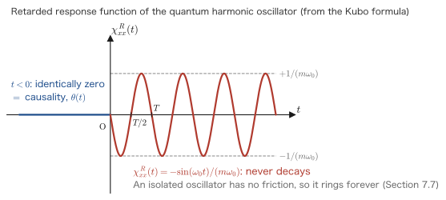

Chapter 7Derivation of the Kubo Formula
We have arrived at the heart of this book. In Part I we re-solved the damped oscillator with Green's functions and built the toolkit of response functions, convolution integrals, causality, and poles in the complex plane; in Part II we developed the residue theorem, and in Chapter 6 we put the interaction picture and the time-evolution operator $\hat U_I$ in place. All the tools are now in hand, and in this chapter we use them all at once. The question is simple: when a weak external field is applied to a quantum system in an equilibrium state, how do the physical quantities of the system change? The answer is the Kubo formula.
$$ \chi^R_{AB}(t-t') = -\frac{\ii}{\hbar}\,\theta(t-t')\,\braket{\,[\hat A_H(t),\hat B_H(t')]\,} $$Look at the right-hand side. The external field $f$ appears nowhere. All that is there is the expectation value of the commutator of two operators at different times, taken in the equilibrium state before the external field is applied. In other words, “the reply to a kick” is determined entirely by “the properties of the system before the kick.” This is the reason the field of linear response theory exists, and it is what Ryogo Kubo wrote down in general form in 1957.
The goal of this chapter is to derive this formula without skipping a single line. In particular, the point where readers first stumble is “Why does a commutator appear?” In the middle of the perturbation-theory calculation, $[\ \cdot\ ,\ \cdot\ ]$ suddenly appears, and from there the argument abruptly becomes abstract. In this chapter we write out the bra-side term and the ket-side term one by one, so that we can see with our own eyes the moment at which they combine into a commutator. After that, we give three answers to “Why a commutator?”
- The definition of the retarded response function $\chi^R_{AB}$, and a proof that it depends only on $t-t'$
- The Fourier transform $\chi^R_{AB}(\omega)=\int_0^\infty\chi^R_{AB}(t)\ee^{\ii(\omega+\ii\eta)t}\dd t$, and the fact that $\eta$ acts as a convergence factor
- Why a commutator?—three answers: (a) Hermiticity, (b) the stationarity of equilibrium, and (c) the Poisson bracket in the classical limit
- A complete calculation of $\chi^R_{xx}(\omega)$ of the quantum harmonic oscillator from the Kubo formula, and a comparison of the result with the Green's function of Chapter 2 and the mechanical susceptibility of Chapter 3
- The fact that the difference in sign convention ($\Ham'=+f\hat B$ or $\Ham'=-f\hat B$) determines the overall sign of $\chi$, and how to handle this when reading the literature
- The Kubo formula for the electrical conductivity—the surprise that a transport coefficient can be written in terms of a correlation function in the equilibrium state
7.1 Setup — What Do We Kick, and What Do We Measure?
7.1.1 Splitting the Hamiltonian in two
We split the Hamiltonian of the system into two parts.
Definition 7.1: Notation
- $\Ham_0$: the time-independent Hamiltonian. It describes the system itself. Everything except the external field is contained here, including the interactions between particles and the external potential. $\Ham_0$ need not be solved—this is the important point. Even if we cannot write down its eigenstates explicitly, all of the arguments below remain valid.
- $\hat B$: a Hermitian operator of the system ($\hat B^\dagger=\hat B$). It specifies where the external field couples to the system. It is the “place where we kick.”
- $f(t)$: a real c-number (not an operator, just a function). It describes how the strength of the external field varies in time. It is “how we kick.”
- $\hat A$: the Hermitian operator corresponding to the physical quantity we want to measure. It is the “place where we listen.” $\hat A$ may be the same as $\hat B$ or different from it.
- $\eta$: a small positive real number ($\eta>0$). At the end we take $\eta\to0^+$. It is called the adiabatic factor (Section 7.1.2).
- $\ket{0}$: the ground state of $\Ham_0$. We suppose that the system is in this state at $t=-\infty$. At finite temperature it is replaced by the thermal equilibrium ensemble (Section 7.3.5).
What we want to find is the change in the expectation value of $\hat A$ caused by applying the external field,
$$ \delta\braket{\hat A(t)} \equiv \braket{\hat A(t)} - \braket{\hat A}_0, \qquad \braket{\hat A}_0 \equiv \bra{0}\hat A\ket{0} $$to first order in $f$. Here $\braket{\hat A}_0$ is the equilibrium value in the absence of the external field, and it is a time-independent constant.
Why do we treat $\hat A$ and $\hat B$ as separate operators?
Because in experiments it is usual for the place where we kick and the place where we listen to differ. If we apply an electric field and measure a current (conductivity, Section 7.8), then $\hat A=\hat B$; but if we apply an electric field and measure the magnetization (the Edelstein effect, or the spin accumulation at the edges due to the spin Hall effect), or apply a temperature gradient and measure a current (the thermoelectric effect), then $\hat A\ne\hat B$. In screening (Chapters 9 and 10), where we place a charge at one position $\xx'$ and measure the density at another position $\xx$, the type of operator is the same but the positions differ. It pays to set up the general theory with $\hat A\ne\hat B$; the case $\hat A=\hat B$ is then automatically included as a special case.
| Physical external field | $f(t)$ | $\hat B$ (kick) | $\hat A$ (listen) | Name of $\chi^R_{AB}$ | Where it appears |
|---|---|---|---|---|---|
| Force $F(t)$ (pulling the spring) | $-F(t)$ | $\hat x$ | $\hat x$ | Mechanical susceptibility | Section 7.6 |
| External potential (energy) $\phi_{\text{ext}}$ | $\phi_{\text{ext}}(\xx,t)$ | $\hat\rho(\xx)$ | $\hat\rho(\xx)$ | Density response function | Chapters 9 and 10 |
| Electric field (vector potential) | $-A_x(t)$ | $\hat J^p_x$ | $\hat J^p_x$ | Current–current correlation | Section 7.8 |
| Magnetic field $B_z$ | $-B_z(t)$ | $\hat M_z$ | $\hat M_z$ | Magnetic susceptibility $\chi_m$ | Chapter 8 |
Most Important Caution: $f$ is not a “force”; it is a “generalized external field”
In this book the external perturbation is written
$$ \Ham_{\text{ext}}(t) = +f(t)\,\hat B\,\ee^{\eta t} $$with a plus sign. This is the convention of the source text, Fetter–Walecka (the $\Ham_{\text{ext}}=\int\dd^3x\,\phi_{\text{ext}}(\xx,t)\hat\rho(\xx)$ of Section 13 of that book is exactly this form), and the standard textbooks of modern many-body theory, such as Mahan and Bruus–Flensberg, follow it as well. From Chapter 8 through Chapter 13, this book is written entirely in this convention.
Therefore $f$ is not a force. The sign is reversed compared with that of the mechanical force $F$. $f$ is “the strength of an external field that couples to $\hat B$ with a plus sign in the Hamiltonian”—a potential-like quantity, so to speak. Indeed, in the density response (Chapter 9), $f=\phi_{\text{ext}}$ itself—the external potential energy felt by one electron (the electrostatic potential multiplied by the charge; Chapter 9, Section 9.1). Since electrons do not want to go where the potential energy is high, the response is negative—this is the reason that $\chi^0(\qq\to0,0)=-N(\epsilon_F)<0$ in Chapters 9 and 10.
This sign convention fixes the overall sign of $\chi$. Conventions differ from one reference to another, so when you read another book, first check “how it writes the external field in the Hamiltonian”. We summarize this practice in a table in Section 7.6.5.
7.1.2 What does the adiabatic factor $\ee^{\eta t}$ do?
Eq. \eqref{eq:7-setup} contains an extra factor $\ee^{\eta t}$. Here $\eta>0$ is a small positive number, and at the end we take $\eta\to0^+$. We introduced this factor in Chapter 6, Section 6.8, but let us sort out its role here. The factor $\ee^{\eta t}$ is zero at $t\to-\infty$, equal to $1$ at $t=0$, and almost $1$ wherever $t$ is finite (because $\eta$ is small).
The three roles of $\ee^{\eta t}$
(1) It fixes the initial condition. Since the perturbation is exactly zero at $t=-\infty$, we can state definitively that the system was then in the eigenstate $\ket{0}$ of $\Ham_0$. If an external field were switched on suddenly at some instant, the shock would cause unwanted transient oscillations.
(2) It extracts only the steady-state response. In the forced oscillation of Chapter 3, the general solution was the transient solution (which decays away) plus the steady-state solution. The factor $\ee^{\eta t}$ is a device that creates the situation “enough time has passed” without using the friction $\gamma$.
(3) A mathematical convergence factor. As we will see in Section 7.4, $\int_0^\infty\ee^{\ii\omega t}\dd t$ does not converge for real $\omega$, but it does converge if we replace $\omega\to\omega+\ii\eta$. This $\ii\eta$ is precisely a consequence of $\ee^{\eta t}$. Conversely, $1/\eta$ represents the scale of “the time available for the experiment.”
Note also that $\eta$ is a mathematical auxiliary quantity that is set to zero at the end, and is distinct from the friction $\gamma$ (a finite physical quantity) of Chapters 2 and 3. The two appear in the same place in the equations and are therefore easily confused. We deal with this head-on in Section 7.7.
7.1.3 Why can we stop at first order?
“Linear response” is the approximation that truncates $\delta\braket{\hat A}$ at first order in $f$. Expanding, we obtain
$$ \delta\braket{\hat A(t)} = \underbrace{\int\!\chi^{(1)}f}_{\text{first order: linear response}} + \underbrace{\int\!\!\int\!\chi^{(2)}ff}_{\text{second order: nonlinear}} + \cdots $$and the terms of second order and higher are nonlinear response. The condition under which we may stop at first order is that “the energy the external field gives to the system is much smaller than the characteristic energy scale of the system.”
A rule of thumb for when linear response holds
For electrons in a metal, the condition is $eEd\ll\epsilon_F$ ($d$ is the mean free path); in copper at room temperature, the response remains linear with a wide margin up to $E\sim10^{6}\ \mathrm{V/m}$—this is exactly the regime in which Ohm's law holds. In optics, the condition is that the optical electric field be much weaker than the electric field inside an atom ($\sim10^{11}\ \mathrm{V/m}$). Ordinary light sources satisfy this, but it breaks down for intense femtosecond lasers, where nonlinear optics such as second-harmonic generation appears. In neutron and X-ray scattering, the condition is that the scattering potential be weak so that the Born approximation holds (Chapter 12).
In short, almost all of the response coefficients found in textbooks (dielectric constant, conductivity, magnetic susceptibility, thermal conductivity, viscosity) are linear responses. Linear response theory is not an “approximate special theory”; it is the theory that deals with the very quantities that are routinely measured in experiments.
7.2 The Main First-Order Calculation — How the Commutator Appears
7.2.1 Reviewing the tools (recap of Chapter 6)
All the tools we need are in Chapter 6.
The interaction picture and the time-evolution operator (Chapter 6, Sections 6.4–6.6)
If we define the state and the operator by $\ket{\psi_I(t)}\equiv\ee^{\ii\Ham_0t/\hbar}\ket{\psi_S(t)}$ and $\hat O_I(t)\equiv\ee^{\ii\Ham_0t/\hbar}\hat O_S\ee^{-\ii\Ham_0t/\hbar}$, then the time evolution of the state is driven by the perturbation alone, and the time evolution of the operator is driven by $\Ham_0$ alone:
$$ \begin{equation} \ii\hbar\frac{\partial}{\partial t}\ket{\psi_I(t)} = \Ham_{\text{ext},I}(t)\,\ket{\psi_I(t)}, \qquad \Ham_{\text{ext},I}(t) = \ee^{\ii\Ham_0 t/\hbar}\,\Ham_{\text{ext}}(t)\,\ee^{-\ii\Ham_0 t/\hbar} \label{eq:7-schrI} \end{equation} $$Writing the solution as $\ket{\psi_I(t)}=\hat U_I(t,t_0)\ket{\psi_I(t_0)}$, the operator $\hat U_I$ satisfies the integral equation $\hat U_I(t,t_0)=1-\frac{\ii}{\hbar}\int_{t_0}^{t}\dd t_1\Ham_{\text{ext},I}(t_1)\hat U_I(t_1,t_0)$, and successive substitution yields the Dyson series. What we need in this chapter is only up to first order:
Terms of second order and higher are proportional to $f^2,f^3,\ldots$, so we discard them in linear response. Note also that $\hat U_I$ is unitary ($\hat U_I^\dagger\hat U_I=1$), and this plays a decisive role in the calculation below. What we are about to do is solve this equation under the initial condition $\ket{\psi_I(-\infty)}=\ket{0}$.
Notation Note: $\hat A_I(t)$ and $\hat A_H(t)$ are the same thing
As far as the equations go, $\hat A_I(t)=\ee^{\ii\Ham_0t/\hbar}\hat A\ee^{-\ii\Ham_0t/\hbar}$ is exactly the same as “the operator in the Heisenberg picture with respect to $\Ham_0$ (Chapter 6; many authors say ‘Heisenberg representation’ instead).” Therefore, in the final formulas of this book we follow convention and write it as $\hat A_H(t)$. This $H$ means the Heisenberg picture with respect to $\Ham_0$, not the one with respect to the total Hamiltonian including the external field. Every operator appearing on the right-hand side of the Kubo formula undergoes time evolution in the world without the external field. That is precisely why we can say that “the response is determined solely by information from before the external field is applied.” If you get this point wrong, the meaning of the formula becomes fundamentally unintelligible.
7.2.2 Rewriting the expectation value in the interaction picture
The quantity we want to measure is the expectation value in the Schrödinger picture:
$$ \braket{\hat A(t)} = \bra{\psi_S(t)}\hat A_S\ket{\psi_S(t)} $$We rewrite this in terms of interaction-picture quantities. Solving the definition $\ket{\psi_I(t)}=\ee^{\ii\Ham_0t/\hbar}\ket{\psi_S(t)}$ in reverse gives $\ket{\psi_S(t)}=\ee^{-\ii\Ham_0t/\hbar}\ket{\psi_I(t)}$, so
Derivation: The expectation value does not depend on the picture
$$ \begin{aligned} \braket{\hat A(t)} &= \bra{\psi_S(t)}\hat A_S\ket{\psi_S(t)}\\ &= \left(\bra{\psi_I(t)}\ee^{+\ii\Ham_0t/\hbar}\right)\hat A_S\left(\ee^{-\ii\Ham_0t/\hbar}\ket{\psi_I(t)}\right)\\ &= \bra{\psi_I(t)}\underbrace{\ee^{\ii\Ham_0t/\hbar}\hat A_S\ee^{-\ii\Ham_0t/\hbar}}_{=\ \hat A_I(t)}\ket{\psi_I(t)} \end{aligned} $$In the second line we used $\left(\ee^{-\ii\Ham_0t/\hbar}\ket{\psi_I}\right)^\dagger=\bra{\psi_I}\ee^{+\ii\Ham_0t/\hbar}$ (since $\Ham_0$ is Hermitian, $\left(\ee^{-\ii\Ham_0t/\hbar}\right)^\dagger=\ee^{+\ii\Ham_0t/\hbar}$). Therefore
∎ In the last equality we used $\ket{\psi_I(t)}=\hat U_I(t,-\infty)\ket{0}$.
7.2.3 Writing out the terms one by one — why does a commutator appear?
We have finally reached the heart of this chapter. We substitute Eq. \eqref{eq:7-U1} into Eq. \eqref{eq:7-expect} and expand. We write out everything without skipping any intermediate steps.
Derivation 7.1: First-order perturbation — the moment the commutator appears
Step 1: Writing $\hat U_I$ to first order. From Eq. \eqref{eq:7-U1},
$$ \hat U_I(t,-\infty) = 1 - \frac{\ii}{\hbar}\int_{-\infty}^{t}\dd t_2\,\Ham_{\text{ext},I}(t_2) $$(We have named the integration variable $t_2$. The reason will be clear shortly.)
Step 2: Taking its Hermitian conjugate. This is the crucial step. The Hermitian conjugate of a product reverses the order of the factors, and a complex number becomes its complex conjugate. We have $\left(-\frac{\ii}{\hbar}\right)^*=+\frac{\ii}{\hbar}$, and $\Ham_{\text{ext},I}(t_1)$ is a Hermitian operator. Indeed,
$$ \Ham_{\text{ext},I}^\dagger(t_1) = \left(\ee^{\ii\Ham_0t_1/\hbar}\Ham_{\text{ext}}(t_1)\ee^{-\ii\Ham_0t_1/\hbar}\right)^\dagger = \ee^{\ii\Ham_0t_1/\hbar}\Ham_{\text{ext}}^\dagger(t_1)\ee^{-\ii\Ham_0t_1/\hbar} = \Ham_{\text{ext},I}(t_1) $$(since $\Ham_{\text{ext}}=f\hat B\ee^{\eta t}$ with $f$ real and $\hat B$ Hermitian, we have $\Ham_{\text{ext}}^\dagger=\Ham_{\text{ext}}$). An integral is merely a sum of operators, so the integral as a whole is also Hermitian. Therefore
The sign has flipped from $-$ to $+$. This single sign reversal is what produces the commutator.
Step 3: Expanding the sandwich. We substitute into Eq. \eqref{eq:7-expect}:
$$ \braket{\hat A(t)} = \bra{0} \left(1 + \frac{\ii}{\hbar}\int_{-\infty}^{t}\!\!\dd t_1\,\Ham_{\text{ext},I}(t_1)\right) \hat A_I(t) \left(1 - \frac{\ii}{\hbar}\int_{-\infty}^{t}\!\!\dd t_2\,\Ham_{\text{ext},I}(t_2)\right) \ket{0} $$We expand the parentheses mechanically. This gives $2\times2=4$ terms. We number them and write them out one by one.
$$ \begin{aligned} \text{(0)}\quad&\bra{0}\hat A_I(t)\ket{0}\\[2pt] \text{(I)}\quad&+\frac{\ii}{\hbar}\int_{-\infty}^{t}\dd t_1\;\bra{0}\,\Ham_{\text{ext},I}(t_1)\,\hat A_I(t)\,\ket{0}\\[2pt] \text{(II)}\quad&-\frac{\ii}{\hbar}\int_{-\infty}^{t}\dd t_2\;\bra{0}\,\hat A_I(t)\,\Ham_{\text{ext},I}(t_2)\,\ket{0}\\[2pt] \text{(III)}\quad&+\frac{1}{\hbar^2}\int_{-\infty}^{t}\!\!\dd t_1\int_{-\infty}^{t}\!\!\dd t_2\;\bra{0}\Ham_{\text{ext},I}(t_1)\hat A_I(t)\Ham_{\text{ext},I}(t_2)\ket{0} \end{aligned} $$Term (III) contains two factors of $\Ham_{\text{ext}}$, so it is proportional to $f^2$. In linear response we discard it.
Step 4: Evaluating term (0). This is the value when there is no external field. Since $\ket{0}$ is an eigenstate of $\Ham_0$ ($\Ham_0\ket{0}=E_0\ket{0}$), the exponentials become mere phases:
$$ \bra{0}\hat A_I(t)\ket{0} = \bra{0}\ee^{\ii\Ham_0t/\hbar}\hat A\,\ee^{-\ii\Ham_0t/\hbar}\ket{0} = \ee^{\ii E_0t/\hbar}\,\ee^{-\ii E_0t/\hbar}\,\bra{0}\hat A\ket{0} = \bra{0}\hat A\ket{0} = \braket{\hat A}_0 $$The phases cancel completely, and we obtain the time-independent equilibrium value. This is only natural: without an external field, nothing moves. Therefore the change in the expectation value is given by
$$ \delta\braket{\hat A(t)} = \text{(I)} + \text{(II)} $$This is the change we seek.
Step 5: Matching the names of the integration variables. The $t_1$ in term (I) and the $t_2$ in term (II) are both dummy variables running from $-\infty$ to $t$. Their names do not matter, so we rewrite both as $t'$. The integrals of the two terms then combine into a single one:
$$ \delta\braket{\hat A(t)} = \frac{\ii}{\hbar}\int_{-\infty}^{t}\dd t'\;\bra{0}\Big( \underbrace{\Ham_{\text{ext},I}(t')\,\hat A_I(t)}_{\text{from term (I)}} \;-\; \underbrace{\hat A_I(t)\,\Ham_{\text{ext},I}(t')}_{\text{from term (II)}} \Big)\ket{0} $$(Term (II) originally carried a minus sign, so when we factor out $+\frac{\ii}{\hbar}$ from the whole, the sign inside the parentheses becomes $-$.)
Step 6: Recognizing a commutator. The expression inside the parentheses equals
$$ \Ham_{\text{ext},I}(t')\hat A_I(t) - \hat A_I(t)\Ham_{\text{ext},I}(t') = -\left[\hat A_I(t),\,\Ham_{\text{ext},I}(t')\right] $$(In the definition of the commutator, $[\hat X,\hat Y]=\hat X\hat Y-\hat Y\hat X$, the order is the opposite of the one here, hence the minus sign.) Therefore
Step 7: Inserting the explicit form of $\Ham_{\text{ext}}$. We have $\Ham_{\text{ext},I}(t')=f(t')\ee^{\eta t'}\,\hat B_I(t')$. Since $f(t')$ and $\ee^{\eta t'}$ are mere numbers, they can be freely taken outside the commutator:
$$ \left[\hat A_I(t),\,f(t')\ee^{\eta t'}\hat B_I(t')\right] = f(t')\,\ee^{\eta t'}\left[\hat A_I(t),\hat B_I(t')\right] $$Substituting this and, following the convention of Section 7.2.1, rewriting the index $I$ as $H$, we obtain
∎ Here $\braket{\cdots}=\bra{0}\cdots\ket{0}$ is the expectation value in the unperturbed ground state. This is the substance of the Kubo formula. What remains is only a matter of tidying up how it is written.
7.2.4 Reading the result
What does Eq. \eqref{eq:7-main} say?
The change in $\hat A$ at time $t$ is the sum of the contributions of the external field $f(t')$ applied at all past times $t'$ ($t'<t$). The weight of each time is given by the equilibrium expectation value of the commutator of “$\hat A$ at time $t$” and “$\hat B$ at time $t'$”.
(1) The upper limit of the integral is $t$. Future external fields have no effect. We did not assume causality; it came out automatically from the range of integration of $\hat U_I(t,-\infty)$. What was a postulate in Chapter 1 becomes a theorem once we start from quantum mechanics.
(2) The operators inside the commutator evolve under $\Ham_0$, and the external field $f$ lies outside the commutator. So the commutator part knows nothing about the external field. It is determined solely by “the properties of the system before we kick it.”
(3) The response always appears later than the stimulus. As we saw in (1), the integral runs only over the past ($t'<t$), so an external field at $t'>t$ does not reach $\hat A$. This fact that “the reply always comes afterward” is precisely the origin of the word “retarded.” Note also that the commutator is written in the order “the measured operator on the left, the kicked one on the right,” and, moreover, with the later time on the left; this is convenient for remembering this state of affairs.
7.3 The Retarded Response Function (the Kubo Formula)
Eq. \eqref{eq:7-main} is already the answer. As it stands, however, it looks different in form from the framework we built in Chapter 1—“response = convolution of the response function and the external field.” The upper limit of the integral is $t$, so it is not a convolution $\int_{-\infty}^{\infty}$. In this section we put it into proper form. The result is the Kubo formula.
7.3.1 Extending the upper limit of the integral to $+\infty$ with the step function
With the Heaviside step function
$$ \theta(s) = \begin{cases} 1 & (s>0)\\ 0 & (s<0)\end{cases} $$restricting the upper limit of the integral to $t$ is the same as multiplying the integrand by $\theta(t-t')$ and extending the upper limit to $+\infty$:
$$ \int_{-\infty}^{t}\dd t'\,g(t,t') = \int_{-\infty}^{+\infty}\dd t'\,\theta(t-t')\,g(t,t') $$Indeed, for $t'>t$ we have $\theta(t-t')=0$, so the extra part we added vanishes. Therefore Eq. \eqref{eq:7-main} can be rewritten as
$$ \delta\braket{\hat A(t)} = \int_{-\infty}^{+\infty}\dd t'\; \left\{-\frac{\ii}{\hbar}\theta(t-t')\braket{[\hat A_H(t),\hat B_H(t')]}\right\}\;f(t')\,\ee^{\eta t'} $$We would like to give a name to the part in braces. Before that, however, we need to check whether this quantity depends on $t$ and $t'$ separately or only on the difference $t-t'$. Unless it depends only on the difference, it will not take the convolution form of Chapter 1.
7.3.2 Why it depends only on $t-t'$
Theorem 7.1: Time-translation invariance
If $\Ham_0$ does not depend on time and the state in which the expectation value is taken is an eigenstate of $\Ham_0$ (or a density matrix that commutes with $\Ham_0$), then
$$ \braket{\left[\hat A_H(t),\hat B_H(t')\right]} $$depends only on the difference $t-t'$ of $t$ and $t'$.
Derivation 7.2: Proof of Theorem 7.1 (the case $T=0$)
We write down the first term of the commutator, $\bra{0}\hat A_H(t)\hat B_H(t')\ket{0}$. Substituting the definition of the Heisenberg operators gives
$$ \bra{0}\hat A_H(t)\hat B_H(t')\ket{0} = \bra{0}\;\ee^{\ii\Ham_0t/\hbar}\hat A\,\ee^{-\ii\Ham_0t/\hbar}\;\ee^{\ii\Ham_0t'/\hbar}\hat B\,\ee^{-\ii\Ham_0t'/\hbar}\;\ket{0} $$Step 1: Combining the two middle exponentials. Since $\Ham_0$ commutes with itself, the law of exponents can be used as it is, and we get
$$ \ee^{-\ii\Ham_0t/\hbar}\,\ee^{\ii\Ham_0t'/\hbar} = \ee^{-\ii\Ham_0(t-t')/\hbar} $$Step 2: Acting with the exponentials at the two ends on the state. Since $\Ham_0\ket{0}=E_0\ket{0}$,
$$ \bra{0}\ee^{\ii\Ham_0t/\hbar} = \ee^{\ii E_0t/\hbar}\bra{0}, \qquad \ee^{-\ii\Ham_0t'/\hbar}\ket{0} = \ee^{-\ii E_0t'/\hbar}\ket{0} $$(For the left side we used $\bra 0\Ham_0=E_0\bra0$, which holds because $\Ham_0$ is Hermitian.) Multiplying the two, the phase becomes
$$ \ee^{\ii E_0t/\hbar}\cdot\ee^{-\ii E_0t'/\hbar} = \ee^{\ii E_0(t-t')/\hbar} $$and this, too, depends only on the difference.
Step 3: Putting the pieces together.
$$ \bra{0}\hat A_H(t)\hat B_H(t')\ket{0} = \ee^{\ii E_0(t-t')/\hbar}\,\bra{0}\hat A\,\ee^{-\ii\Ham_0(t-t')/\hbar}\,\hat B\ket{0} $$On the right-hand side, $t$ and $t'$ appear only in the combination $t-t'$. The second term $\bra0\hat B_H(t')\hat A_H(t)\ket0$ also becomes a function of $t-t'$ alone by exactly the same calculation. ∎
7.3.3 The Kubo formula
We are now ready to give it a name.
Definition 7.2: The retarded response function (the Kubo formula)
We call this the retarded response function, or the Kubo formula. The index $R$ is the initial letter of “retarded.” $\hat A_H,\hat B_H$ are operators in the Heisenberg picture with respect to the unperturbed Hamiltonian $\Ham_0$, and $\braket{\cdots}$ is the expectation value in the unperturbed equilibrium state.
With this notation, Eq. \eqref{eq:7-main} can be written as
In the limit $\eta\to0^+$ we have $\ee^{\eta t'}\to1$, and this is the convolution integral of Chapter 1 itself.
We are completely back in Chapter 1
In Chapter 1 we stated that a linear, time-translation-invariant, causal response always takes the convolution form
$$ \text{output}(t) = \int_{-\infty}^{\infty}\dd t'\;\chi(t-t')\;\text{input}(t') $$Eq. \eqref{eq:7-conv} is exactly this form. An object that looks at first sight entirely different, a quantum many-body system, fits directly into the framework we built in Chapter 1.
And in Chapter 1 we could not tell what the content of $\chi(t)$ was. We had no choice but to compute it case by case: the Green's function of Chapter 2 for a spring, $\ee^{-t/RC}/R$ for an RC circuit. Eq. \eqref{eq:7-kubo} gives a universal expression for that content. Whatever the system, and whatever $\hat A$ and $\hat B$ are, the response function is “the expectation value of a commutator in the unperturbed system.” This is the power of the Kubo formula.
7.3.4 Note that we have not yet solved $\Ham_0$
The Kubo formula is not “the answer” but “a way of writing the answer”
Eq. \eqref{eq:7-kubo} is beautiful, but as it stands it does not produce a single number. To compute the expectation value of the commutator we need to know the eigenstates of $\Ham_0$, and that is, in general, the unsolvable many-body problem itself. Why, then, is it useful? (1) It changed the nature of the problem—it translated “a nonequilibrium problem with an external field applied” into “a problem of equilibrium correlation functions.” For the latter we have a full set of tools: perturbation theory, Feynman diagrams, and first-principles calculations. (2) General properties can be read off—without computing anything explicitly, causality, analyticity, sum rules, and the fluctuation–dissipation theorem hold independently of the system (Chapter 8). (3) It gives a starting point for approximations—a path opens for introducing the interaction step by step, starting from a noninteracting system (the random-phase approximation, RPA; Chapters 9 and 10). The harmonic oscillator of Section 7.6 is one of the few examples in which $\Ham_0$ can be solved exactly. It is best to master how to use the formula there first.
7.3.5 The finite-temperature case — derivation with the density matrix
So far we have assumed $T=0$, that is, that the system is in the ground state $\ket{0}$. At finite temperature the system is in a thermal-equilibrium ensemble, which cannot be described by a single state vector. We use the density matrix.
Derivation 7.3: First-order perturbation with the density matrix (valid at finite temperature as well)
Step 1: The unperturbed density matrix. In thermal equilibrium at temperature $T=1/k_B\beta$, the density matrix is
$$ \hat\rho_0 = \frac{\ee^{-\beta\Ham_0}}{Z}, \qquad Z = \Tr\,\ee^{-\beta\Ham_0} $$What matters is that $\hat\rho_0$ is a function of $\Ham_0$, so that
$$ \left[\hat\rho_0,\;\Ham_0\right] = 0 $$holds; that is, $\hat\rho_0$ is stationary (it does not evolve in time in the absence of an external field). For $T=0$ we have $\hat\rho_0=\ket{0}\bra{0}$, which also commutes with $\Ham_0$. The argument below is valid for both cases.
Step 2: The von Neumann equation in the interaction picture. The time evolution of the density matrix is given by $\ii\hbar\partial_t\hat\rho=[\Ham,\hat\rho]$ (the von Neumann equation). Moving to the interaction picture, $\hat\rho_I(t)=\ee^{\ii\Ham_0t/\hbar}\hat\rho(t)\ee^{-\ii\Ham_0t/\hbar}$, the contribution of $\Ham_0$ drops out, so that
$$ \ii\hbar\frac{\partial\hat\rho_I(t)}{\partial t} = \left[\Ham_{\text{ext},I}(t),\,\hat\rho_I(t)\right] $$holds.
Step 3: Solving to first order. With the initial condition $\hat\rho_I(-\infty)=\hat\rho_0$, we integrate both sides and replace $\hat\rho_I$ on the right-hand side by $\hat\rho_0$ (this is the first-order approximation):
$$ \hat\rho_I(t) = \hat\rho_0 - \frac{\ii}{\hbar}\int_{-\infty}^{t}\dd t'\left[\Ham_{\text{ext},I}(t'),\,\hat\rho_0\right] $$Step 4: Taking the expectation value. The expectation value is $\braket{\hat A(t)}=\Tr\left[\hat\rho_I(t)\,\hat A_I(t)\right]$ (in the interaction picture, too, the expectation value is unchanged as long as both the state and the operator are transformed). The first-order term is
$$ \delta\braket{\hat A(t)} = -\frac{\ii}{\hbar}\int_{-\infty}^{t}\dd t'\; \Tr\Big\{\left[\Ham_{\text{ext},I}(t'),\hat\rho_0\right]\hat A_I(t)\Big\} $$Step 5: Moving the commutator using the cyclicity of the trace. This is the crux of the calculation. We use the property $\Tr(\hat X\hat Y\hat Z)=\Tr(\hat Z\hat X\hat Y)$. Abbreviating $\hat X\equiv\Ham_{\text{ext},I}(t')$ and $\hat A\equiv\hat A_I(t)$, we have
$$ \begin{aligned} \Tr\Big\{[\hat X,\hat\rho_0]\hat A\Big\} &= \Tr\left(\hat X\hat\rho_0\hat A\right) - \Tr\left(\hat\rho_0\hat X\hat A\right)\\ &= \Tr\left(\hat\rho_0\hat A\hat X\right) - \Tr\left(\hat\rho_0\hat X\hat A\right) \qquad\text{(we used the cyclicity } \Tr(\hat X\hat\rho_0\hat A)=\Tr(\hat\rho_0\hat A\hat X)\text{ on the first term)}\\ &= \Tr\Big\{\hat\rho_0\left[\hat A,\hat X\right]\Big\} = \braket{\left[\hat A,\hat X\right]} \end{aligned} $$That is, the “commutator with $\hat\rho_0$” has been moved to the “commutator with $\hat A$.” In the language of first quantization, this is an operation corresponding to “integration by parts.”
Step 6: The result.
$$ \delta\braket{\hat A(t)} = -\frac{\ii}{\hbar}\int_{-\infty}^{t}\dd t'\; \braket{\left[\hat A_H(t),\,\Ham_{\text{ext},I}(t')\right]} $$∎ This is exactly the same as Eq. \eqref{eq:7-comm-general}. Now, however, $\braket{\cdots}=\Tr(\hat\rho_0\cdots)$ means the thermal average. If we insert $\Ham_{\text{ext},I}=f\ee^{\eta t'}\hat B_I$, the Kubo formula, Eq. \eqref{eq:7-kubo}, holds in exactly the same form at finite temperature as well. The form of the formula does not change; only the meaning of the expectation value does.
7.4 The Fourier Transform and the Convergence Factor $\eta$
7.4.1 The convolution theorem
Eq. \eqref{eq:7-conv} is a convolution, so a Fourier transform turns it into a product. The Fourier convention of this book is the one used in Chapter 1, namely
$$ \begin{equation} g(\omega) = \int_{-\infty}^{\infty}\dd t\,g(t)\,\ee^{\ii\omega t}, \qquad g(t) = \int_{-\infty}^{\infty}\frac{\dd\omega}{2\pi}\,g(\omega)\,\ee^{-\ii\omega t} \label{eq:7-fourier} \end{equation} $$If we let $\eta\to0^+$ and drop $\ee^{\eta t'}$, the convolution theorem immediately gives
The structure we established classically in Chapters 1 and 3—“a convolution in the time domain, a product in the frequency domain”—holds unchanged for quantum many-body systems as well.
7.4.2 Definition of $\chi^R_{AB}(\omega)$ and the convergence factor
Derivation 7.4: Writing down $\chi^R_{AB}(\omega)$
We calculate according to the definition. Since $\chi^R_{AB}(t)$ contains $\theta(t)$, it vanishes for $t<0$. Therefore the lower limit of the integral becomes $0$:
$$ \chi^R_{AB}(\omega) = \int_{-\infty}^{\infty}\dd t\;\chi^R_{AB}(t)\,\ee^{\ii\omega t} = \int_{0}^{\infty}\dd t\;\chi^R_{AB}(t)\,\ee^{\ii\omega t} $$This is where one gets stuck. In general $\chi^R_{AB}(t)$ does not decay as $t\to\infty$. As we will see in Section 7.6, for the harmonic oscillator $\chi^R_{xx}(t)\propto\sin\omega_0t$, which keeps oscillating forever. This integral does not converge.
$\ee^{\eta t}$ comes to the rescue. Eq. \eqref{eq:7-conv} carried a factor $\ee^{\eta t'}$. If we substitute the monochromatic external field $f(t')=f_0\ee^{-\ii\omega t'}$ and redo the calculation, we find that this factor moves to the response-function side as a damping factor $\ee^{-\eta t}$ (we verify this explicitly in the next subsection, Section 7.4.3). As a result, we simply write
We have $\ee^{\ii(\omega+\ii\eta)t}=\ee^{\ii\omega t}\ee^{-\eta t}$, and its absolute value is $\ee^{-\eta t}\to0$ ($t\to\infty$), so the integral converges as long as $\chi^R_{AB}(t)$ is bounded. ∎
7.4.3 Response to a monochromatic external field — seeing $\eta$ at work
Derivation 7.5: Inserting $f(t)=f_0\ee^{-\ii\omega t}$
The most common situation in experiments is shaking the system at a fixed frequency. We substitute $f(t')=f_0\ee^{-\ii\omega t'}$ into Eq. \eqref{eq:7-main}:
$$ \delta\braket{\hat A(t)} = \int_{-\infty}^{t}\dd t'\;\chi^R_{AB}(t-t')\;f_0\,\ee^{-\ii\omega t'}\,\ee^{\eta t'} $$Step 1: Changing variables to $s=t-t'$. Then $t'=t-s$ and $\dd t'=-\dd s$, and the range of integration becomes $t'=-\infty\Rightarrow s=+\infty$, $t'=t\Rightarrow s=0$. The minus sign is used to interchange the upper and lower limits of the integral, giving
$$ \delta\braket{\hat A(t)} = \int_{0}^{\infty}\dd s\;\chi^R_{AB}(s)\;f_0\,\ee^{-\ii\omega(t-s)}\,\ee^{\eta(t-s)} $$Step 2: Pulling out the part that depends on $t$. Since $\ee^{-\ii\omega(t-s)}=\ee^{-\ii\omega t}\ee^{\ii\omega s}$ and $\ee^{\eta(t-s)}=\ee^{\eta t}\ee^{-\eta s}$, we have
$$ \delta\braket{\hat A(t)} = f_0\,\ee^{-\ii\omega t}\,\ee^{\eta t}\;\int_{0}^{\infty}\dd s\;\chi^R_{AB}(s)\;\ee^{\ii\omega s}\ee^{-\eta s} $$Step 3: The integral is Eq. \eqref{eq:7-chi-omega} itself. Since $\ee^{\ii\omega s}\ee^{-\eta s}=\ee^{\ii(\omega+\ii\eta)s}$, we obtain
The $\chi^R_{AB}(\omega)$ on the right-hand side is precisely the definition in Eq. \eqref{eq:7-chi-omega}, and $\eta$ is already woven into it. There is also a convention of reading this as “a function of the complex variable $z=\omega+\ii\eta$ evaluated just above the real axis” and writing it explicitly as $\chi^R_{AB}(\omega+\ii\eta)$; this book also uses that notation in Section 7.9 and Table 7.4. Since it is just another notation for the same thing, please do not be confused.
∎ The $\ee^{\eta t}$ of the external field is carried over unchanged to the response, and at the same time $\ee^{-\eta s}$ moves to the response-function side and becomes the convergence factor. This makes completely clear why $\ii\eta$ enters Eq. \eqref{eq:7-chi-omega}. The $\eta$ was not added afterward for convenience; it is a consequence of the $\ee^{\eta t}$ that was in the perturbation from the beginning.
7.4.4 Static response — the case $\omega=0$
Setting $\omega=0$ in Eq. \eqref{eq:7-mono} gives the case in which a constant external field $f_0$, independent of time, is applied infinitely slowly.
$$ \delta\braket{\hat A} = \chi^R_{AB}(\omega=0)\;f_0 $$This is the static susceptibility. Setting $\omega=0$ in Eq. \eqref{eq:7-chi-omega} gives
Here $\hat B(0)$ is the operator at time $0$ in the Heisenberg picture, that is, $\hat B_H(0)=\hat B$ itself. Below we write the operator at time $0$ sometimes as $\hat B(0)$ and sometimes as $\hat B_H(0)$, but both are the same thing.
The magnetic susceptibility $\chi_m$, the static dielectric constant $\epsilon(0)$, the compressibility, the softness of a spring—the quantity most often measured in experiments is this $\chi^R_{AB}(0)$. Note, however, that the answer can change depending on the order in which the limits $\omega\to0$ and $\eta\to0^+$ are taken (Chapter 10, Section 10.2).
7.5 Why a Commutator? — Three Viewpoints
That the Kubo formula contains a commutator could be understood mechanically from the calculation of Section 7.2. But we suspect you have not yet been convinced of “why it is natural for it to come out this way.” Here we answer from three angles. All three are correct, and all three say the same thing in different words.
7.5.1 Viewpoint (a): a consequence of the perturbation being Hermitian
This is a restatement of the calculation of Section 7.2 itself, but it is worth digging into its meaning.
Unitarity ⇒ commutator
The time evolution of quantum mechanics is unitary ($\hat U^\dagger\hat U=1$). This is the mathematical expression of the conservation of probability—the fact that particles neither disappear nor appear from nowhere—and for this to hold, the generator, the Hamiltonian, must be Hermitian. Now, an expectation value always has the form $\bra{\psi}\hat A\ket{\psi}$, with the operator sandwiched from both sides, so the time-evolution operator also attaches on both sides. On the bra side it is $\hat U^\dagger$ and on the ket side it is $\hat U$, and taking the Hermitian conjugate flips the sign, $\ii\to-\ii$. The difference of two terms with flipped signs = a commutator.
Suppose, hypothetically, that the perturbation were anti-Hermitian ($\Ham_{\text{ext}}^\dagger=-\Ham_{\text{ext}}$). Then taking the conjugate would not flip the sign, and we would obtain the sum of the two terms, that is, the anticommutator $\{\hat A,\hat B\}=\hat A\hat B+\hat B\hat A$. However, this would mean that the time evolution is no longer unitary, so it does not occur in a physical closed system. The reason a commutator, and not an anticommutator, appears in the response function is simply that the time evolution is unitary, and nothing more.
Note also that the correlation $\braket{\hat A_H(t)\hat B(0)}$ of the “plain product,” without taking the commutator, is a physically important quantity as well, and it appears in Chapter 8 as the spectral function (fluctuations). The commutator is the response (dissipation), and the plain product is the fluctuation—and what connects the two is the fluctuation–dissipation theorem.
Derivation 7.6: $\chi^R_{AB}(t)$ is a real function
Hermiticity yields one more property that is very important in practice. Let $\hat A,\hat B$ be Hermitian operators.
Step 1: The Hermitian conjugate of the commutator.
$$ \left[\hat A_H(t),\hat B_H(t')\right]^\dagger = \left(\hat A_H\hat B_H - \hat B_H\hat A_H\right)^\dagger = \hat B_H^\dagger\hat A_H^\dagger - \hat A_H^\dagger\hat B_H^\dagger = \hat B_H\hat A_H - \hat A_H\hat B_H = -\left[\hat A_H(t),\hat B_H(t')\right] $$(We have $\hat A_H^\dagger=\hat A_H$. This is because $\hat A_H=\ee^{\ii\Ham_0t/\hbar}\hat A\ee^{-\ii\Ham_0t/\hbar}$, and if $\hat A$ is Hermitian, taking the Hermitian conjugate returns the same form.) In other words, the commutator is an anti-Hermitian operator.
Step 2: The expectation value of an anti-Hermitian operator is purely imaginary. In general, if $\hat C^\dagger=-\hat C$, then $\braket{\hat C}^*=\braket{\hat C^\dagger}=-\braket{\hat C}$; that is, $\braket{\hat C}$ is purely imaginary. Therefore
$$ \braket{\left[\hat A_H(t),\hat B_H(t')\right]} = \ii\times(\text{real number}) $$Step 3: Conclusion. The Kubo formula, Eq. \eqref{eq:7-kubo}, gives $-\frac{\ii}{\hbar}\theta\times(\ii\times\text{real number})=\frac{1}{\hbar}\theta\times(\text{real number})$, so
∎ This is only natural physically. $\delta\braket{\hat A(t)}$ is a real number that can be measured in an experiment, and $f(t)$ is also real, so it would be unacceptable for their ratio to be complex. The factor $-\ii/\hbar$ in the formula is there precisely to cancel the purely imaginary character of the commutator. If the $\ii$ ever looks superfluous, it helps to recall this calculation.
Note also that being real in the time domain means, after the Fourier transform, $\chi^R_{AB}(-\omega)=\left[\chi^R_{AB}(\omega)\right]^*$. This is what was stated in Chapters 1 and 4 as the “reality condition.” Here, too, we have returned to the framework of Part I.
7.5.2 Viewpoint (b): in equilibrium, “nothing happens unless we kick”
The second viewpoint comes from the stationarity of the equilibrium state. Let us look once more at the equation obtained in Step 3 of Derivation 7.3.
$$ \delta\hat\rho_I(t) = -\frac{\ii}{\hbar}\int_{-\infty}^{t}\dd t'\left[\Ham_{\text{ext},I}(t'),\,\hat\rho_0\right] $$The right-hand side is the commutator of the perturbation and the density matrix. From this we can read off the following at once.
Theorem 7.2: If it commutes, there is no response
If the perturbation $\Ham_{\text{ext}}$ commutes with the equilibrium density matrix $\hat\rho_0$, then $\delta\hat\rho=0$; that is, no matter how hard we kick, the system does not change at all (within the linear regime).
Example 7.1: Nothing happens when we kick with a conserved quantity
What happens to $\delta\braket{\hat A(t)}$ when $\hat B=\Ham_0$, that is, when the perturbation is $\Ham_{\text{ext}}(t)=f(t)\Ham_0$ (an external field that multiplies the entire Hamiltonian by $(1+f)$)?
Solution. Since $\Ham_0$ commutes with itself, it does not depend on time even in the Heisenberg picture: $\Ham_{0,H}(t')=\Ham_0$. Using $\Ham_0\ket{0}=E_0\ket{0}$ and $\bra{0}\Ham_0=E_0\bra{0}$, we obtain
$$ \braket{\left[\hat A_H(t),\Ham_0\right]} = E_0\bra{0}\hat A_H(t)\ket{0} - E_0\bra{0}\hat A_H(t)\ket{0} = 0 $$Hence $\delta\braket{\hat A(t)}=0$. Physically, multiplying $\Ham_0$ as a whole by $(1+f)$ does not change the eigenstates themselves (the eigenvalues are merely scaled), so the expectation value of any physical quantity remains unchanged. By the same argument, in a system that conserves particle number, if we take $\hat B=\hat N$, then as long as the equilibrium state commutes with $\hat N$, the response is zero for any $\hat A$. This is a natural result, but the fact that the Kubo formula reproduces it correctly serves as a good check of the soundness of the formula.
7.5.3 Viewpoint (c): returning to the Poisson bracket in the classical limit
The third viewpoint may be the easiest for readers in engineering to accept. Taking the classical limit of the Kubo formula gives the linear response theory of classical mechanics. The commutator is nothing but its quantum version.
Correspondence between the commutator and the Poisson bracket
The Poisson bracket of analytical mechanics is defined, for functions $F,G$ of the canonical variables $(x,p)$, by
$$ \begin{equation} \{F,G\}_{\text{PB}} \equiv \frac{\partial F}{\partial x}\frac{\partial G}{\partial p} - \frac{\partial F}{\partial p}\frac{\partial G}{\partial x} \label{eq:7-poisson} \end{equation} $$(for many degrees of freedom, we sum over all the variables). The basic correspondence in quantization is the following.
Indeed, $[\hat x,\hat p]=\ii\hbar$ corresponds to $\{x,p\}_{\text{PB}}=1$.
Derivation 7.7: The classical limit of the Kubo formula
Substitute Eq. \eqref{eq:7-correspondence} into the Kubo formula, Eq. \eqref{eq:7-kubo}. Let us confirm that all the $\hbar$ cancel.
$$ \chi^R_{AB}(t) = -\frac{\ii}{\hbar}\,\theta(t)\,\braket{\left[\hat A_H(t),\hat B_H(0)\right]} \;\longrightarrow\; -\frac{\ii}{\hbar}\,\theta(t)\,\ii\hbar\,\braket{\{A(t),B(0)\}_{\text{PB}}} $$Organizing the coefficients, we have $-\frac{\ii}{\hbar}\cdot\ii\hbar = -\ii^2 = +1$. Therefore
∎ The $\hbar$ has disappeared completely. This is an important check. If $\hbar$ remained, it would mean that the classical limit does not exist. The seemingly strange coefficient $-\ii/\hbar$ of the Kubo formula is there precisely so that the classical limit exists cleanly.
Classically, the expectation value $\braket{\cdots}$ becomes the average over phase space, $\int\dd\Gamma\,\rho_0(\Gamma)\cdots$ (this $\dd\Gamma$ is the volume element of phase space and has nothing to do with the damping rate $\Gamma$ of Chapter 2). $\rho_0$ is the equilibrium distribution (the canonical distribution $\ee^{-\beta H_0}/Z$, for example).
Physical meaning of the Poisson bracket — Why “sensitivity”?
$\{A(t),B(0)\}$ is a quantity that measures how much $A$ at time $t$ changes when the initial condition is changed slightly. If the external field $H_{\text{ext}}=fB$ is applied for only a short time $\Delta t$, the canonical equations shift the initial condition by $\delta x=+f\frac{\partial B}{\partial p}\Delta t$ and $\delta p=-f\frac{\partial B}{\partial x}\Delta t$. The amount of this shift that is transmitted to $A$ at time $t$ is
$$ \delta A(t) = \frac{\partial A(t)}{\partial x}\delta x + \frac{\partial A(t)}{\partial p}\delta p = f\,\Delta t\left(\frac{\partial A(t)}{\partial x}\frac{\partial B}{\partial p}-\frac{\partial A(t)}{\partial p}\frac{\partial B}{\partial x}\right) = f\,\Delta t\,\{A(t),B\}_{\text{PB}} $$This is exactly the Poisson bracket. It was only to be expected that “the size of the reply to a kick” can be written with the Poisson bracket. In quantum theory, this “way the shift of the initial condition is transmitted” is replaced by the commutator. That is all there is to it.
Note also that one can derive Eq. \eqref{eq:7-classical} directly by starting from the classical Liouville equation $\partial_t\rho=\{H,\rho\}_{\text{PB}}$ (the von Neumann equation with Eq. \eqref{eq:7-correspondence} applied). This is the complete classical counterpart of Derivation 7.3; instead of the cyclicity of the trace, one only needs to use integration by parts in phase space, $\int\dd\Gamma\,F\{G,\rho\}=\int\dd\Gamma\,\{F,G\}\rho$. The same structure emerges from classical mechanics alone, without passing through quantum theory.
Example 7.2: Computing the Poisson bracket for the classical harmonic oscillator
Let $H_0=\frac{p^2}{2m}+\frac12m\omega_0^2x^2$ and $A=B=x$, and find $\{x(t),x(0)\}_{\text{PB}}$.
Solution. The solution of the canonical equations can be written in terms of the initial condition $(x,p)$ as $x(t)=x\cos\omega_0t+\frac{p}{m\omega_0}\sin\omega_0t$ (a form we have seen many times in Chapters 2 and 6). Since $B=x(0)=x$, the partial derivatives are $\frac{\partial x(t)}{\partial x}=\cos\omega_0t$, $\frac{\partial x(t)}{\partial p}=\frac{\sin\omega_0t}{m\omega_0}$, $\frac{\partial x}{\partial x}=1$, and $\frac{\partial x}{\partial p}=0$. Substituting into the definition, Eq. \eqref{eq:7-poisson}, we obtain
$$ \{x(t),x(0)\}_{\text{PB}} = \cos\omega_0t\cdot 0 - \frac{\sin\omega_0t}{m\omega_0}\cdot 1 = -\frac{\sin\omega_0 t}{m\omega_0} \qquad\Longrightarrow\qquad \chi^{R,\text{cl}}_{xx}(t) = -\frac{\sin\omega_0t}{m\omega_0}\,\theta(t) $$Please remember this result. In Section 7.6 we compute the same quantity from quantum theory (using creation and annihilation operators) and confirm that the answer is exactly the same. Since the harmonic oscillator is a linear system, the response functions of quantum and classical mechanics coincide. Note also that the result is a c-number that does not depend on the initial condition $(x,p)$, so averaging over the equilibrium distribution does not change its value. This too corresponds to the quantum-mechanical fact that “the commutator is a c-number.”
7.6 Example: $\chi^R_{xx}(\omega)$ of the Harmonic Oscillator
So far the discussion has been abstract. In this section we actually use the Kubo formula. The system is the quantum harmonic oscillator, with $\hat A=\hat B=\hat x$. Since this is the most important calculation in the whole book, we proceed more carefully than ever.
7.6.1 Preparation — what are we computing?
The unperturbed Hamiltonian is
$$ \Ham_0 = \frac{\hat p^2}{2m} + \frac12 m\omega_0^2\hat x^2 = \hbar\omega_0\left(\hat a^\dagger\hat a + \frac12\right) $$The position operator can be written in terms of the creation and annihilation operators as
$$ \begin{equation} \hat x = \sqrt{\frac{\hbar}{2m\omega_0}}\left(\hat a + \hat a^\dagger\right), \qquad \left[\hat a,\hat a^\dagger\right]=1 \label{eq:7-x-ladder} \end{equation} $$The position operator in the Heisenberg picture, which we found in Chapter 6, Section 6.3, is
Note that the right-hand form looks exactly the same as the classical solution (Chapter 6, Section 6.3.3). What we want to find is
$$ \chi^R_{xx}(t) = -\frac{\ii}{\hbar}\theta(t)\braket{\left[\hat x_H(t),\hat x_H(0)\right]} $$Since $\hat x_H(0)=\hat x$, what we must compute is the expectation value of the commutator $[\hat x_H(t),\hat x]$.
7.6.2 Computing the commutator
Derivation 7.8: Computing $[\hat x_H(t),\hat x]$ with creation and annihilation operators
Step 1: Writing both in terms of $\hat a,\hat a^\dagger$. From Eqs. \eqref{eq:7-x-ladder} and \eqref{eq:7-xH}, the common factor $\sqrt{\hbar/2m\omega_0}$ appears twice, so
$$ \left[\hat x_H(t),\hat x\right] = \frac{\hbar}{2m\omega_0}\left[\hat a\,\ee^{-\ii\omega_0t}+\hat a^\dagger\ee^{\ii\omega_0t},\;\hat a+\hat a^\dagger\right] $$Step 2: Splitting into four terms by bilinearity. The commutator is linear in each argument, so it can be expanded mechanically. Since $\ee^{\pm\ii\omega_0t}$ are just numbers, they come out of the commutator:
$$ = \frac{\hbar}{2m\omega_0}\Big( \ee^{-\ii\omega_0t}\underbrace{[\hat a,\hat a]}_{=0} + \ee^{-\ii\omega_0t}[\hat a,\hat a^\dagger] + \ee^{\ii\omega_0t}[\hat a^\dagger,\hat a] + \ee^{\ii\omega_0t}\underbrace{[\hat a^\dagger,\hat a^\dagger]}_{=0} \Big) $$(The commutator of an operator with itself is zero.)
Step 3: Inserting the commutation relations. Since $[\hat a,\hat a^\dagger]=1$ and $[\hat a^\dagger,\hat a]=-1$,
$$ = \frac{\hbar}{2m\omega_0}\left(\ee^{-\ii\omega_0t} - \ee^{\ii\omega_0t}\right) $$Step 4: Converting to a trigonometric function. We use Euler's formula $\ee^{\ii\theta}-\ee^{-\ii\theta}=2\ii\sin\theta$. Here the order is reversed, so
$$ \ee^{-\ii\omega_0t}-\ee^{\ii\omega_0t} = -2\ii\sin\omega_0t $$Therefore
Alternative solution. Using the right-hand form $\hat x\cos\omega_0t+\frac{\hat p}{m\omega_0}\sin\omega_0t$ of Eq. \eqref{eq:7-xH}, we can obtain the result in one line from the canonical commutation relation alone, without going through the creation and annihilation operators:
$$ \left[\hat x_H(t),\hat x\right] = \left[\hat x\cos\omega_0t+\frac{\hat p}{m\omega_0}\sin\omega_0t,\;\hat x\right] = \frac{\sin\omega_0t}{m\omega_0}\left[\hat p,\hat x\right] = \frac{\sin\omega_0t}{m\omega_0}\cdot(-\ii\hbar) = -\frac{\ii\hbar\sin\omega_0t}{m\omega_0} $$(The canonical commutation relation is $[\hat x,\hat p]=\ii\hbar$, and hence $[\hat p,\hat x]=-\ii\hbar$.) The two calculations give the same answer. ∎
Three points to note about Eq. \eqref{eq:7-xx-comm}
(1) The result is a c-number. No operator remains on the right-hand side. Therefore taking the expectation value changes nothing, and $\braket{[\hat x_H(t),\hat x]}=-\frac{\ii\hbar}{m\omega_0}\sin\omega_0t$, so the expectation value is the same in any state—the ground state, an excited state, thermal equilibrium at finite temperature, or a coherent state. This is a consequence of the harmonic oscillator being a linear system; in a general system this does not happen.
(2) It is purely imaginary. As proved in Derivation 7.6, the expectation value of the commutator of two Hermitian operators is always purely imaginary. We have confirmed this here as well.
(3) $\hbar$ remains. However, when we multiply by $-\ii/\hbar$ in the Kubo formula, $\hbar$ disappears. The response function itself is a classical quantity and contains no $\hbar$—the next step confirms this. The most interesting point of this section is that the fundamental commutation relation $[\hat x,\hat p]=\ii\hbar$ eliminates $\hbar$ inside the response function and leaves only the information about the classical spring.
7.6.3 The response function in the time domain
Derivation 7.9: $\chi^R_{xx}(t)$
We substitute Eq. \eqref{eq:7-xx-comm} into the Kubo formula \eqref{eq:7-kubo}. Let us calculate the coefficient carefully:
$$ \chi^R_{xx}(t) = -\frac{\ii}{\hbar}\,\theta(t)\cdot\left(-\frac{\ii\hbar}{m\omega_0}\sin\omega_0t\right) $$Extracting only the coefficient, we have
$$ \left(-\frac{\ii}{\hbar}\right)\times\left(-\frac{\ii\hbar}{m\omega_0}\right) = \frac{\ii^2\,\hbar}{\hbar\,m\omega_0} = \frac{-1}{m\omega_0} $$(We used $\ii^2=-1$, and $\hbar$ canceled.) Therefore
∎ $\hbar$ has disappeared completely. Moreover, the result agrees exactly with $\chi^{R,\text{cl}}_{xx}(t)=-\frac{\sin\omega_0t}{m\omega_0}\theta(t)$, which we obtained classically in Example 7.2.

7.6.4 Fourier transform
Derivation 7.10: $\chi^R_{xx}(\omega)$ — without skipping a single integral
We compute following Eq. \eqref{eq:7-chi-omega}. In what follows we abbreviate $z\equiv\omega+\ii\eta$ (so that $\mathrm{Im}\,z=\eta>0$).
$$ \chi^R_{xx}(\omega) = \int_0^\infty\dd t\;\left(-\frac{\sin\omega_0t}{m\omega_0}\right)\ee^{\ii z t} = -\frac{1}{m\omega_0}\int_0^\infty\dd t\;\sin(\omega_0t)\,\ee^{\ii zt} $$Step 1: Opening up $\sin$ into exponentials. From $\sin\theta=\dfrac{\ee^{\ii\theta}-\ee^{-\ii\theta}}{2\ii}$ we have
$$ = -\frac{1}{2\ii\,m\omega_0}\int_0^\infty\dd t\;\left(\ee^{\ii\omega_0t}-\ee^{-\ii\omega_0t}\right)\ee^{\ii zt} = -\frac{1}{2\ii\,m\omega_0}\left[\int_0^\infty\!\!\ee^{\ii(z+\omega_0)t}\dd t - \int_0^\infty\!\!\ee^{\ii(z-\omega_0)t}\dd t\right] $$Step 2: Computing the basic integral. For a complex number $X$ with $\mathrm{Im}\,X>0$, we have
$$ \int_0^\infty \ee^{\ii Xt}\,\dd t = \left[\frac{\ee^{\ii Xt}}{\ii X}\right]_0^\infty = \frac{0-1}{\ii X} = -\frac{1}{\ii X} = \frac{\ii}{X} $$Let us check why the upper limit vanishes: $\abs{\ee^{\ii Xt}} = \ee^{-(\mathrm{Im}X)t}\to0$ ($t\to\infty$). Here the condition $\eta>0$ is doing the work. If $\eta=0$ exactly, $\abs{\ee^{\ii Xt}}=1$ remains, and the upper limit oscillates and does not converge. In the last equality we used $\frac{1}{\ii}=-\ii$, and hence $-\frac{1}{\ii X}=-\frac{-\ii}{X}=\frac{\ii}{X}$.
Now $X=z\pm\omega_0$, and $\mathrm{Im}(z\pm\omega_0)=\eta>0$ ($\omega_0$ is real, so it does not change the imaginary part), so the result applies to both integrals:
$$ \chi^R_{xx}(\omega) = -\frac{1}{2\ii\,m\omega_0}\left[\frac{\ii}{z+\omega_0}-\frac{\ii}{z-\omega_0}\right] $$Step 3: Canceling $\ii$. Pulling the $\ii$ inside the brackets out to the front gives $\frac{\ii}{2\ii}=\frac12$:
$$ = -\frac{1}{2m\omega_0}\left[\frac{1}{z+\omega_0}-\frac{1}{z-\omega_0}\right] $$Step 4: Bringing to a common denominator.
$$ \frac{1}{z+\omega_0}-\frac{1}{z-\omega_0} = \frac{(z-\omega_0)-(z+\omega_0)}{(z+\omega_0)(z-\omega_0)} = \frac{-2\omega_0}{z^2-\omega_0^2} $$Step 5: Substituting and simplifying.
$$ \chi^R_{xx}(\omega) = -\frac{1}{2m\omega_0}\cdot\frac{-2\omega_0}{z^2-\omega_0^2} = \frac{1}{m\left(z^2-\omega_0^2\right)} = -\frac{1}{m\left(\omega_0^2-z^2\right)} $$Restoring $z=\omega+\ii\eta$, we obtain
∎ This is the response function of the quantum harmonic oscillator obtained from the Kubo formula.
How far should we expand in $\eta$, and where are the poles?
Since $\eta$ is infinitesimal, we may take $(\omega+\ii\eta)^2\simeq\omega^2+2\ii\eta\omega$, which gives $\chi^R_{xx}(\omega)\simeq-\left[m(\omega_0^2-\omega^2-2\ii\eta\omega)\right]^{-1}$. Comparing this with $\chi=\frac1m\left[\omega_0^2-\omega^2-\ii\frac{\gamma}{m}\omega\right]^{-1}$ of Chapter 3, we see that $2\eta$ sits where $\gamma/m$ sits. In other words, $\eta$ acts as “infinitesimal friction.” Note, however, that since we take $\eta\to0^+$, it differs from real friction (Section 7.7).
Pole positions. From $\omega_0^2-(\omega+\ii\eta)^2=0$ we get $\omega+\ii\eta=\pm\omega_0$, that is, $\omega=\pm\omega_0-\ii\eta$. Both poles lie slightly below the real axis, and there are no poles in the upper half-plane. This is the expression of causality (Chapters 4 and 8).
7.6.5 ★Correspondence with Chapter 3 — where does the sign come from?★
This is the place in this chapter that requires the most care. Eq. \eqref{eq:7-chiR-omega} carries a minus sign. Yet the mechanical susceptibility we found in Chapter 3 was
$$ \chi_{\text{Ch.\,3}}(\omega) = \frac{1}{m(\omega_0^2-\omega^2)-\ii\gamma\omega} \;\xrightarrow[\gamma\to0]{}\; \frac{1}{m(\omega_0^2-\omega^2)} $$with a plus sign. The signs are opposite. Is there a contradiction? There is not. We settle the matter below.
★Most Important★: The sign correspondence with Chapter 3 — not a contradiction but a “difference in how the coupling is written”
Where the problem lies. In Chapter 3 we considered a spring subject to an external force $F(t)$. The potential energy is then
$$ U(x) = \frac12 m\omega_0^2x^2 - F\,x $$(the force is $-\partial U/\partial x = -m\omega_0^2x+F$, so the external force $F$ is indeed applied). That is, the perturbation is
$$ \Ham' = -\,\hat x\,F \qquad\text{(minus sign)} $$In this chapter, however, we adopted the convention of writing $\Ham_{\text{ext}}=+f\hat B$ with a plus sign. Setting $\hat B=\hat x$, we get
$f$ and $F$ have opposite signs. This is the cause of the whole discrepancy.
Verification. We substitute $f=-F$ into this chapter's formula $\delta\braket{\hat x}=\chi^R_{xx}f$. For a monochromatic external field $F(t)=F_0\ee^{-\ii\omega t}$ and $\eta\to0$,
$$ \delta\braket{\hat x} = \chi^R_{xx}(\omega)\cdot\left(-F_0\ee^{-\ii\omega t}\right) = \left(-\frac{1}{m(\omega_0^2-\omega^2)}\right)\cdot\left(-F_0\ee^{-\ii\omega t}\right) = \frac{F_0\,\ee^{-\ii\omega t}}{m(\omega_0^2-\omega^2)} $$The two minus signs multiply and return us to plus. And this is exactly the same as the answer of Chapter 3 (with $\gamma\to0$):
$$ \delta\braket{\hat x} = \chi_{\text{Ch.\,3}}(\omega)\,F_0\,\ee^{-\ii\omega t}, \qquad \chi_{\text{Ch.\,3}}(\omega)=\frac{1}{m(\omega_0^2-\omega^2)} $$That is,
The physics is exactly the same. Only the sign in the formula differs. The difference is only in the convention of “how the external field is written in the Hamiltonian.”
Intuitive check. It becomes clear if we consider the static case ($\omega=0$).
- In the convention of this chapter, the perturbation is $\Ham_{\text{ext}}=f\hat x$, that is, we add $+fx$ to the potential. If $f>0$, the potential is raised on the positive-$x$ side. The particle moves toward the lower potential (the $x<0$ side). Hence $\delta\braket{x}<0$, that is, $\chi^R_{xx}(0)=-\frac{1}{m\omega_0^2}<0$. Negative is correct.
- In the convention of Chapter 3, we apply a force $F>0$ to the right, so the particle moves to the right. Then $\delta x>0$, that is, $\chi_{\text{Ch.\,3}}(0)=+\frac{1}{m\omega_0^2}>0$. Positive is correct.
Both are physically correct, and both describe the same phenomenon. It helps to remember it in one phrase: “$f$ is a potential-like quantity, $F$ is a force.” If we raise the potential, the particle flees (a negative response); if we apply a force, the particle is pushed (a positive response).
Consistency with Chapters 9 and 10. For the density response we write $\Ham_{\text{ext}}=\int\dd^3x\,\phi_{\text{ext}}(\xx,t)\hat\rho(\xx)$. This means $f=\phi_{\text{ext}}$ (the potential energy felt by one electron), which is precisely a “potential-like quantity.” Hence $\chi_{\rho\rho}(\qq,0)<0$ and $\chi^0(\qq\to0,0)=-N(\epsilon_F)<0$. Electrons flee from places where the potential energy is high. The reasoning is exactly the same as for $\chi^R_{xx}(0)<0$ in this section.
Lesson. The sign of $\chi$ is determined not by the physics but by how the coupling is written. When reading the literature, before copying any formula, always check
how that book writes the external field in the Hamiltonian ($+f\hat B$ or $-f\hat B$)
If you neglect this, screening turns into anti-screening, absorption turns into gain, and the sign of the dielectric function goes wrong. Please make it a habit to check this one line before you look at the formulas.
| The $\Ham'=+f\hat B$ convention (this book, Fetter–Walecka, Mahan, Bruus–Flensberg) | The $\Ham'=-f\hat B$ convention (standard form in mechanics, Kubo's original paper, Chapters 1–3 of this book) | |
|---|---|---|
| Name of the external field | generalized potential $f$ | generalized force $F$ |
| Relation between the two | $f = -F$ | |
| Definition of the response function | $\chi^R_{AB}(t)=-\frac{\ii}{\hbar}\theta(t)\braket{[\hat A_H(t),\hat B(0)]}$ | $\chi^{K}_{AB}(t)=+\frac{\ii}{\hbar}\theta(t)\braket{[\hat A_H(t),\hat B(0)]}$ |
| Response formula | $\delta\braket{\hat A}=\int\chi^R_{AB}\,f$ | $\delta\braket{\hat A}=\int\chi^{K}_{AB}\,F$ |
| Relation between the two | $\chi^{K}_{AB}(\omega) = -\,\chi^R_{AB}(\omega)$ | |
| Harmonic oscillator ($\gamma\to0$) | $\chi^R_{xx}=-\dfrac{1}{m\left[\omega_0^2-(\omega+\ii\eta)^2\right]}$ | $\chi^{K}_{xx}=+\dfrac{1}{m\left[\omega_0^2-(\omega+\ii\eta)^2\right]}$ |
| Sign in the static limit | $\chi^R_{xx}(0)=-\dfrac{1}{m\omega_0^2}<0$ | $\chi^{K}_{xx}(0)=+\dfrac{1}{m\omega_0^2}>0$ |
| Condition for absorption ($\omega>0$) | $\chi''<0$ (the dissipative part is $-\chi''$) | $\chi''>0$ |
| Absorbed power | $P=-\frac12 f_0^2\,\omega\,(\chi^{R})''$ | $P=+\frac12 F_0^2\,\omega\,(\chi^{K})''$ |
| Density response ($q\to0$, static) | $\chi^0=-N(\epsilon_F)<0$ | $+N(\epsilon_F)>0$ |
| Where it appears in this book | Chapters 7–13 | Chapters 1–3 |
The superscript $K$ in the table means nothing more than “the susceptibility in the $\Ham'=-f\hat B$ convention (Kubo's original paper, Chapters 1–3 of this book).” It is completely different from the same symbol $\chi^K$ (the Keldysh component) that appears in the Keldysh formalism, so please do not confuse the two when you move on to textbooks on many-body theory.
Derivation 7.11: Checking the sign of the absorbed power
Let us check the “absorption” row of Table 7.2. In the convention of this book, the rate at which the external field gives energy to the system is $\frac{\dd W}{\dd t}=\Braket{\frac{\partial\Ham}{\partial t}}=\dot f(t)\braket{\hat B(t)}$. Substituting the real external field $f_0\cos\omega t=\frac{f_0}{2}(\ee^{-\ii\omega t}+\ee^{\ii\omega t})$ into Eq. \eqref{eq:7-product}, and using $\chi\equiv\chi^R_{BB}=\chi'+\ii\chi''$ together with the reality condition $\chi(-\omega)=\chi(\omega)^*$ (Derivation 7.6), we obtain
$$ \delta\braket{\hat B(t)} = \frac{f_0}{2}\left[\chi(\omega)\ee^{-\ii\omega t}+\chi(\omega)^*\ee^{\ii\omega t}\right] = f_0\left[\chi'\cos\omega t + \chi''\sin\omega t\right] $$Multiplying this by $\dot f=-f_0\omega\sin\omega t$ and averaging over one period ($\overline{\sin\cos}=0$, $\overline{\sin^2}=\frac12$), we get
∎ Absorption ($\dd W/\dd t>0$) requires $\omega\chi''<0$. In the convention of this book, the quantity that represents dissipation is $-\chi''$. This looks opposite to the statement of Chapter 3 that “$\mathrm{Im}\chi>0$ means absorption,” but that is only natural because $\chi^R=-\chi_{\text{Ch.\,3}}$, and the physics is the same. The loss function $-\mathrm{Im}\,\epsilon^{-1}$ in Chapter 8, Section 8.4.3 and Chapter 9, Section 9.6 is also aligned with this convention throughout.
7.6.6 Relation to the retarded Green's function of Chapter 2
In Chapter 2, we found the retarded Green's function of the damped oscillator to be
$$ G^R(t) = \frac{1}{m\omega_1}\,\ee^{-\gamma t/(2m)}\sin(\omega_1t)\;\theta(t), \qquad \omega_1=\sqrt{\omega_0^2-(\gamma/2m)^2} $$In the limit $\gamma\to0$, we have $\omega_1\to\omega_0$ and the exponential function becomes $1$, giving
$$ G^R(t) \;\xrightarrow[\gamma\to0]{}\; \frac{\sin\omega_0t}{m\omega_0}\,\theta(t) $$Comparing this with Eq. \eqref{eq:7-chiR-t}, we find
Part I and Part III are now completely connected
Eq. \eqref{eq:7-G-vs-chi} is the last bridge connecting the classical part and the quantum part of this book. The $G^R(t)$ of Chapter 2 is the reply of the displacement to a single kick by a unit force (the $\Ham'=-\hat xF$ convention), and the $\chi^R_{xx}(t)$ of this chapter is the reply to a single kick by a unit generalized external field $f$ (the $\Ham'=+f\hat x$ convention); since $f=-F$, we obtain $G^R=-\chi^R_{xx}$. The relation $\chi(\omega)=G^R(\omega)$ of Chapter 3 (the Fourier transform of the Green's function is the susceptibility) reads, in the language of this chapter, $\chi_{\text{Ch.\,3}}(\omega)=-\chi^R_{xx}(\omega)$.
Moreover, this structure is not something that can be used only for the harmonic oscillator. The Kubo formula, Eq. \eqref{eq:7-kubo}, holds whatever $\Ham_0$ may be—it is the same formula for a system of $10^{23}$ interacting electrons, for a superconductor, and for a magnet. The structure we understood with the damped oscillator carries over directly to many-body systems—this was the claim of this book. That claim has now been confirmed concretely.
7.6.7 Computing $\chi''$ to see the absorption spectrum
Derivation 7.12: $\chi''_{xx}(\omega)$ is a pair of delta functions
We start from the partial-fraction decomposition obtained in Step 3 of Derivation 7.10,
$$ \chi^R_{xx}(\omega) = -\frac{1}{2m\omega_0}\left[\frac{1}{\omega+\omega_0+\ii\eta}-\frac{1}{\omega-\omega_0+\ii\eta}\right] $$and apply the Sokhotski–Plemelj formula of Chapter 5,
$$ \frac{1}{x+\ii\eta} = \PV\frac{1}{x} - \ii\pi\delta(x) \qquad(\eta\to0^+) $$to each term. Taking only the imaginary part, we obtain
$$ \chi''_{xx}(\omega) = -\frac{1}{2m\omega_0}\left[-\pi\delta(\omega+\omega_0)+\pi\delta(\omega-\omega_0)\right] $$that is,
The real part comes from the principal-value part, and for $\omega\ne\pm\omega_0$ it is $\chi'_{xx}(\omega)=-\frac{1}{m(\omega_0^2-\omega^2)}$. ∎
Check. Near $\omega=+\omega_0$, we have $\chi''<0$. Substituting into Eq. \eqref{eq:7-power}, the absorbed power is
$$ \overline{\frac{\dd W}{\dd t}} = -\frac12 f_0^2\,\omega_0\cdot\left(-\frac{\pi}{2m\omega_0}\delta(\omega-\omega_0)\right) = \frac{\pi f_0^2}{4m}\,\delta(\omega-\omega_0) \;>\;0 $$It is correctly positive. The system absorbs energy only at the resonance frequency.
7.7 Where Does the Damping $\gamma$ Come From?
7.7.1 The poles of an isolated system lie just below the real axis
As we saw in Section 7.6.4, the poles of $\chi^R_{xx}(\omega)$ lie at
$$ \omega = \pm\omega_0 - \ii\eta $$Since $\eta\to0^+$, the poles approach the real axis arbitrarily closely. In the time domain, the fact that a pole is displaced from the real axis by $-\ii\Gamma$ (that is, that its imaginary part is $-\Gamma$) means decay of the form $\ee^{-\Gamma t}$ (Chapters 2 and 5). Therefore $\Gamma=\eta\to0$ means “no damping.” As shown in Figure 7.3, $\chi^R_{xx}(t)$ keeps ringing forever.
This is correct. An isolated quantum system cannot throw away energy
Nothing strange is happening. Since $\Ham_0$ is independent of time, the energy is conserved. In a system in which energy is conserved, it is impossible for an oscillation to decay (that is, for kinetic energy to disappear somewhere). More generally, in an isolated system with only finitely many levels, the commutator in the Kubo formula becomes a sum of finitely many terms $\ee^{\pm\ii\omega_{n0}t}$ (the Lehmann representation of Chapter 8), and a sum of finitely many oscillations is almost periodic: sooner or later it returns arbitrarily close to its original state (this is the recurrence in quantum systems that corresponds to the Poincaré recurrence theorem of classical mechanics). There is no way for it to decay. Therefore, for “the damping $\gamma$ to be finite,” something outside the system is needed.
7.7.2 Three mechanisms that produce $\gamma$
The origin of damping
(1) Coupling to an environment (heat bath). If the oscillator is weakly coupled to an environment with a vast number of degrees of freedom (a phonon bath, the electromagnetic field, other electrons), the energy is scattered among the enormous number of degrees of freedom and never returns. Starting from a Hamiltonian consisting of the system plus an infinite number of harmonic oscillators (the bath), known as the Caldeira–Leggett model, one can show that the poles sink to a finite depth, $\omega=\pm\omega_1-\ii\gamma/2m$ ($\omega_1=\sqrt{\omega_0^2-(\gamma/2m)^2}$, the same quantity as in Section 7.6.6 and Figure 7.4). The value of $\gamma$ is determined by the coupling constant and the density of states of the bath.
(2) Existence of a continuous spectrum. Even without introducing an environment explicitly, the same thing happens if $\Ham_0$ itself has a continuous excitation spectrum. A sum of finitely many delta functions does not decay, but in a superposition of continuously distributed components the phases spread out and the response decays (Chapter 8, Section 8.4.4). Damping is a product of the thermodynamic limit ($N,V\to\infty$).
(3) Anharmonicity. If there are $x^3,x^4$ terms, energy is exchanged among the modes (phonon–phonon scattering). From the point of view of a single mode, the other modes are the “environment.” This is what determines the lifetime of phonons in a crystal and the lattice thermal conductivity.
The decisive difference between $\eta$ and $\gamma$
Panels (a) and (b) of Figure 7.4 look similar, but $\eta$ and $\gamma$ are entirely different in character.
| Adiabatic factor $\eta$ | Damping constant $\gamma$ | |
|---|---|---|
| Magnitude | Infinitesimal ($\eta\to0^+$) | Finite (a measurable quantity) |
| Origin | Boundary condition (selects the retarded solution) | Coupling to the environment, continuous spectrum |
| Role | Specifying causality, convergence of integrals | Energy dissipation |
| Spectral linewidth | Zero (delta function) | $\gamma/m$ (Lorentzian) |
| Where it appears | All retarded functions | Only systems with dissipation |
| In numerical calculations | A small value for convergence (smearing) | A value fixed by the physics |
7.8 Application to the Electrical Conductivity
The best example showing that the Kubo formula does not end up as “abstract general theory” is the electrical conductivity. The proportionality coefficient $\sigma$ in Ohm's law $j=\sigma E$ can be written in terms of the current–current correlation function in the equilibrium state, in which no current is flowing. This was the subject of Kubo's 1957 paper.
7.8.1 Coupling to the electromagnetic field — the diamagnetic term appears
We apply a uniform electric field to $N$ particles of charge $q$. The field is represented by the vector potential $\bm A(t)$ (SI units, $\bm E=-\partial\bm A/\partial t$, in the gauge where the scalar potential is zero). By minimal coupling, the momentum is replaced as $\pp_i\to\pp_i-q\bm A$:
$$ \Ham = \sum_{i=1}^{N}\frac{\left(\pp_i-q\bm A(t)\right)^2}{2m} + \hat V $$$\hat V$ is the interparticle interaction and the lattice potential, and it does not contain $\bm A$.
Derivation 7.13: Expanding in $\bm A$
Expand the square. Since $\bm A(t)$ is a c-number independent of position, it commutes with $\pp_i$, so we need not worry about the order:
$$ \frac{(\pp_i-q\bm A)^2}{2m} = \frac{\pp_i^2}{2m} - \frac{q}{m}\,\bm A\cdot\pp_i + \frac{q^2\bm A^2}{2m} $$Summing over $i$ gives
Here we consider only the $x$ direction and define the paramagnetic current operator as
$$ \begin{equation} \hat J^p_x \equiv \frac{q}{m}\sum_{i=1}^{N}\hat p_{ix} \label{eq:7-Jp} \end{equation} $$∎
Why does it split into two terms? — the current operator also depends on $\bm A$
This is the nuisance peculiar to the response to an electromagnetic field. Since the velocity is $\hat{\bm v}_i=(\pp_i-q\bm A)/m$, the current operator itself depends on $\bm A$:
$$ \hat J_x = q\sum_i \hat v_{ix} = \frac{q}{m}\sum_i\left(\hat p_{ix}-qA_x\right) = \hat J^p_x - \frac{Nq^2}{m}A_x $$The first term is the paramagnetic current and the second term is the diamagnetic current. The latter is not even an operator but just a number (a c-number proportional to $\bm A$). Therefore, to find $\braket{\hat J_x}$ we must add up two contributions—the part by which the expectation value of $\hat J^p_x$ changes under the external field (calculated with the Kubo formula), and the part due to the operator itself depending on $\bm A$. Forgetting one of these two contributions is the most common pitfall in conductivity calculations. With only one of them, one gets the absurd answer that a DC current flows even in an insulator.
7.8.2 Applying the Kubo formula
Derivation 7.14: The Kubo formula for the conductivity
Step 1: Matching the notation of this book. Compare the first-order term of Eq. \eqref{eq:7-Hem} with $\Ham_{\text{ext}}=f\hat B$:
$$ f(t) = -A_x(t), \qquad \hat B = \hat J^p_x $$(This is the third row of Table 7.1.) What we want to measure is $\hat A=\hat J^p_x$, so the response function we need is $\chi^R_{J^pJ^p}$.
Step 2: Response of the paramagnetic current. From Eq. \eqref{eq:7-product}, in frequency space
$$ \delta\braket{\hat J^p_x}(\omega) = \chi^R_{J^pJ^p}(\omega)\,f(\omega) = -\chi^R_{J^pJ^p}(\omega)\,A_x(\omega) $$Step 3: Adding the diamagnetic term. In the equilibrium state no current is flowing ($\braket{\hat J^p_x}_0=0$), so $\braket{\hat J^p_x}$ is entirely equal to the change $\delta\braket{\hat J^p_x}$ caused by the external field. Therefore the expectation value of the total current is
$$ \braket{\hat J_x}(\omega) = \delta\braket{\hat J^p_x}(\omega) - \frac{Nq^2}{m}A_x(\omega) = -\left[\chi^R_{J^pJ^p}(\omega) + \frac{Nq^2}{m}\right]A_x(\omega) $$Step 4: Converting $\bm A$ to $\bm E$. We transform $E_x=-\partial A_x/\partial t$ with the Fourier convention \eqref{eq:7-fourier} of this book. Since we are looking at the coefficient of $\ee^{-\ii\omega t}$, we have $\partial_t\to-\ii\omega$, and therefore
$$ E_x(\omega) = -(-\ii\omega)A_x(\omega) = \ii\omega\,A_x(\omega) \qquad\Longleftrightarrow\qquad A_x(\omega) = \frac{E_x(\omega)}{\ii\omega} $$Step 5: Substituting and reading off $\sigma$.
$$ \braket{\hat J_x}(\omega) = -\left[\chi^R_{J^pJ^p}+\frac{Nq^2}{m}\right]\frac{E_x(\omega)}{\ii\omega} = \frac{\ii}{\omega}\left[\chi^R_{J^pJ^p}(\omega)+\frac{Nq^2}{m}\right]E_x(\omega) $$(We used $-1/\ii=+\ii$.) The current density is $j_x=\braket{\hat J_x}/V$, so comparing with $j_x=\sigma_{xx}E_x$ we obtain
∎ This is the Kubo formula for the electrical conductivity. By the Kubo formula, Eq. \eqref{eq:7-kubo}, $\chi^R_{J^pJ^p}$ is given by
$$ \chi^R_{J^pJ^p}(t) = -\frac{\ii}{\hbar}\theta(t)\braket{\left[\hat J^p_{x,H}(t),\,\hat J^p_x(0)\right]} $$The electric field does not appear on the right-hand side. In the equilibrium state with no current flowing, if we measure the correlation between current operators, we learn the conductivity.
7.8.3 Free electrons — the $\tau\to\infty$ limit of Drude's result emerges
Example 7.3: A free-electron gas without interactions
Calculate Eq. \eqref{eq:7-kubo-sigma} for the case $\hat V=0$, that is, $\Ham_0=\sum_i\pp_i^2/2m$.
Solution. $\hat J^p_x=\frac{q}{m}\sum_i\hat p_{ix}$ is a sum of momenta, and for free particles the momentum is a conserved quantity, so $[\hat J^p_x,\Ham_0]=0$; hence even in the Heisenberg picture $\hat J^p_{x,H}(t)=\hat J^p_x$ does not depend on time. The commutator then vanishes identically, $[\hat J^p_x,\hat J^p_x]=0$, in other words $\chi^R_{J^pJ^p}=0$, and only the diamagnetic term remains ($q^2=e^2$):
$$ \sigma_{xx}(\omega) = \frac{\ii}{\omega}\cdot\frac{ne^2}{m} = \frac{\ii ne^2}{m(\omega+\ii\eta)} $$Here we have read $1/\omega$ as $1/(\omega+\ii\eta)$. This is not something attached conveniently after the fact. If we keep the adiabatic factor $\ee^{\eta t}$ until the end of the calculation, then by exactly the same mechanism as in Derivation 7.5 we obtain $E_x(\omega)=\ii(\omega+\ii\eta)A_x(\omega)$, and the $\ii/\omega$ in Eq. \eqref{eq:7-kubo-sigma} becomes $\ii/(\omega+\ii\eta)$ (Section 7.4). If we drop $\eta$, we cannot carry out the calculation of the real part described next.
In the Drude theory, if we take the relaxation time $\tau\to\infty$ (no scattering) in $\sigma(\omega)=\frac{ne^2\tau/m}{1-\ii\omega\tau}$, we get $\frac{ne^2\tau/m}{-\ii\omega\tau}=\frac{\ii ne^2}{m\omega}$, which agrees exactly. This is only natural, since free electrons with no scatterers have no resistance.
For the real part, the Sokhotski–Plemelj formula $\frac{\ii}{\omega+\ii\eta}=\pi\delta(\omega)+\ii\PV\frac1\omega$ gives $\mathrm{Re}\,\sigma_{xx}(\omega)=\frac{\pi ne^2}{m}\delta(\omega)$, that is, the DC conductivity is infinite. This too is correct (without scattering the electrons keep being accelerated). To obtain a finite $\sigma_{\text{DC}}$ we must include $\hat V$ (impurities, phonons), calculate $\chi^R_{J^pJ^p}$, and make it partially cancel the diamagnetic term as $\omega\to0$.
7.8.4 Random impurities — a finite conductivity emerges
As announced at the end of the previous subsection, to obtain a finite DC conductivity we must introduce scatterers. Here we treat the most basic kind of scatterer, randomly placed impurities, and follow the calculation all the way to the point where Drude's formula actually emerges from Eq. \eqref{eq:7-kubo-sigma}. The general theory of linear response derives, from quantum mechanics, the formula $\sigma=ne^2\tau/m$ that lies behind Ohm's law, which we learn in junior high school.
The setup is simple. Suppose that $N_{\text{imp}}$ impurities are placed randomly at positions $\bm R_a$, and that each of them creates the same potential $u$:
$$ \begin{equation} \Ham = \Ham_0 + \Ham_{\text{imp}}, \qquad \Ham_{\text{imp}} = \sum_{a=1}^{N_{\text{imp}}} u\!\left(\hat{\bm x}-\bm R_a\right) \label{eq:7-Himp} \end{equation} $$$\Ham_0$ describes free electrons (or Bloch electrons in a perfectly periodic crystal). The single fact that the $\bm R_a$ are random is the only difference from the previous subsection, and it changes everything.
Why may we “average over impurity configurations”?
Eq. \eqref{eq:7-Himp} has a troublesome feature. Once we fix one set of $\bm R_a$, that system has no translational symmetry. Without translational symmetry, $\kk$ is not a good quantum number, and the tools we have used since Chapter 6 (the Fourier transform, momentum conservation) all become unusable. Moreover, the $\bm R_a$ differ from one experiment to the next.
So we take the impurity average. If we average by distributing the $\bm R_a$ uniformly over the whole sample, translational symmetry is restored in the averaged quantities. This is not a mathematical expedient but can be justified physically. A macroscopic sample can be regarded as an enormous number of small regions, each of about the size of the mean free path $\ell$, placed side by side, so the measured $\sigma$ almost coincides with the average value regardless of the individual configuration (self-averaging). The everyday fact that the value of a resistance does not vary from sample to sample is the evidence for this.
Conversely, in mesoscopic systems, where $\ell$ is comparable to the sample size, self-averaging breaks down, and sample-specific reproducible fluctuations (universal conductance fluctuations) appear. The argument below cannot be used there.
What the impurity average does. After averaging, the one-particle Green's function becomes diagonal in $\kk$ and has a self-energy $\Sigma^R$:
$$ G^R(\kk,\omega) = \frac{1}{\hbar\omega-\varepsilon_\kk-\Sigma^R(\kk,\omega)} $$To lowest order (the Born approximation, first order in the impurity concentration $n_{\text{imp}}=N_{\text{imp}}/V$), the imaginary part of $\Sigma^R$ gives the lifetime:
Here $N(\varepsilon_F)$ is the density of states at the Fermi level (per unit volume, per unit energy, per spin). Eq. \eqref{eq:7-tau-born} is Fermi's golden rule itself, and is a concrete example of the “mechanisms that produce $\gamma$” listed in Section 7.7. In other words, the one-particle pole is pushed down from the real axis by $\hbar/2\tau$. This is the whole effect of the scattering.
Derivation 7.15: Computing the current–current correlation to obtain the Drude form
Step 1: What to compute. What Eq. \eqref{eq:7-kubo-sigma} requires is $\chi^R_{J^pJ^p}$. After the impurity average, $\chi^R_{J^pJ^p}$ is given by a “bubble” made of two Green's functions facing each other (a current operator $qp_x/m$ is attached to each vertex).
Step 2: Integrating the bubble. We leave the details to the diagram rules of Appendix C, but the key point is that the commutator that vanished identically in the previous subsection no longer vanishes, thanks to the pole of $G^R$ lying a distance $\hbar/2\tau$ from the real axis. Carrying out the integral under $\varepsilon_F\tau/\hbar\gg1$ ($10^2$ or more in a good metal), we obtain
$$ \frac{\chi^R_{J^pJ^p}(\omega)}{V} = -\frac{nq^2}{m}\cdot\frac{1}{1-\ii\omega\tau} $$as the result.
Step 3: Adding the diamagnetic term. The contents of the square brackets in Eq. \eqref{eq:7-kubo-sigma} are
$$ \frac{\chi^R_{J^pJ^p}}{V}+\frac{nq^2}{m} = \frac{nq^2}{m}\left[1-\frac{1}{1-\ii\omega\tau}\right] = \frac{nq^2}{m}\cdot\frac{-\ii\omega\tau}{1-\ii\omega\tau} $$and when we multiply this by the $\ii/\omega$ in front, $\omega$ cancels:
∎ This is Drude's formula itself. The formula whose agreement we confirmed in the previous subsection in the limit $\tau\to\infty$ has now come out, with $\tau$ finite, from the first principles of quantum mechanics.
Physical Meaning: As $\omega\to0$ the paramagnetic term eats up the diamagnetic term
In Section 7.8.3 we wrote that “to obtain a finite $\sigma_{\text{DC}}$, [the paramagnetic term] must be made to cancel the diamagnetic term in part.” That cancellation actually occurs in Step 3. As $\omega\to0$,
$$ \frac{\chi^R_{J^pJ^p}(0)}{V} = -\frac{nq^2}{m} $$so that the contents of the square brackets become exactly zero. For the free electrons of the previous subsection, $\chi^R_{J^pJ^p}=0$, so the square bracket remained $nq^2/m$, and $\ii/\omega$ made it diverge. When there is scattering, the paramagnetic term grows and eats up exactly the diamagnetic term, and the remaining $O(\omega)$ term cancels against $\ii/\omega$ to leave a finite value.
This cancellation is not limited to metals. The same equality holds in a system that carries no DC current (an insulator), where the square bracket vanishes as $O(\omega^2)$, so that $\sigma\to0$. Only for a perfect conductor (zero scattering) does the square bracket fail to vanish as $\omega\to0$. Conductors, insulators, and perfect conductors can be classified solely by the difference in how the square bracket of this single equation vanishes as $\omega\to0$.
Example 7.4: Relaxation time and mean free path of copper
Copper at room temperature has $\sigma_{\text{DC}}=5.96\times10^{7}\ \mathrm{S/m}$ and a conduction-electron density $n=8.5\times10^{28}\ \mathrm{m^{-3}}$. Find $\tau$ from Eq. \eqref{eq:7-drude}, and evaluate the mean free path $\ell=v_F\tau$ using the Fermi velocity $v_F=1.57\times10^{6}\ \mathrm{m/s}$. Also find $\hbar/\tau$ in meV, and verify whether the quasiparticle picture holds.
Solution. Solving Eq. \eqref{eq:7-drude} for $\tau$ gives $\tau=m\sigma_{\text{DC}}/(ne^2)$.
$$ \tau = \frac{(9.109\times10^{-31})(5.96\times10^{7})}{(8.5\times10^{28})(1.602\times10^{-19})^2} = \frac{5.43\times10^{-23}}{2.18\times10^{-9}} = 2.49\times10^{-14}\ \mathrm{s} $$That is, $\tau\simeq25\ \mathrm{fs}$. The mean free path is
$$ \ell = v_F\tau = (1.57\times10^{6})(2.49\times10^{-14}) = 3.9\times10^{-8}\ \mathrm{m} = 39\ \mathrm{nm} $$which is about 100 times the lattice constant of copper, $3.6\ \text{Å}$. An electron runs past as many as 100 atoms before it is finally scattered once. This is the reason why a metal is a place where “the electrons are packed tightly and yet flow smoothly.”
The width of the level due to scattering is
$$ \frac{\hbar}{\tau} = \frac{1.055\times10^{-34}}{2.49\times10^{-14}} = 4.24\times10^{-21}\ \mathrm{J} = 26\ \mathrm{meV} $$Compared with $\varepsilon_F\simeq7\ \mathrm{eV}$, we have $\varepsilon_F\tau/\hbar\simeq270\gg1$, so the quasiparticle is very long-lived compared with its own energy. We used this condition in Derivation 7.15, and we have now confirmed that it is in fact satisfied sufficiently well. ∎
Caution: The lifetime $\tau$ and the transport time $\tau_{\text{tr}}$ are different things
In the discussion above, we merely inserted the self-energy into the two Green's functions of the bubble, and ignored the vertex correction connecting the two. Strictly, this correction must be included, and its effect amounts to replacing $\tau$ in Eq. \eqref{eq:7-tau-born} by the transport time $\tau_{\text{tr}}$:
$$ \frac{1}{\tau_{\text{tr}}} = \frac{2\pi}{\hbar}\,n_{\text{imp}}\sum_{\kk'}\abs{u(\kk-\kk')}^2\left(1-\cos\theta_{\kk\kk'}\right)\delta(\varepsilon_\kk-\varepsilon_{\kk'}) $$The crux is that the weight $(1-\cos\theta)$ appears. Forward scattering ($\theta\simeq0$) hardly reduces the current—even if an electron changes its direction slightly, the current it carries remains almost the same. Backward scattering ($\theta\simeq\pi$), on the other hand, reverses the current, so it acts most strongly, with $(1-\cos\theta)=2$. The lifetime $\tau$ of a single particle counts only “whether it leaves that state,” so it counts every scattering with the same weight, whichever direction the electron is scattered into. What determines the conductivity is $\tau_{\text{tr}}$, which takes into account “which way the electron was scattered.”
If the impurity potential is isotropic ($s$-wave scattering, with $u(\kk-\kk')$ independent of the angle), then $\braket{\cos\theta}=0$ and $\tau_{\text{tr}}=\tau$, so the result above is correct as it stands. When forward scattering dominates, as for screened Coulomb impurities, $\tau_{\text{tr}}\gg\tau$, and the two can differ by orders of magnitude.
Advice from Prof. Takao Kotani: The “ordinary electrical conductivity formula” follows from linear response
The content of this subsection was written up after learning from Prof. Kotani that “there is a method in linear response theory for calculating the electrical conductivity in the presence of randomly distributed impurities (it gives the ordinary formula for the electrical conductivity).”
It is worth looking back at what has happened here. The starting point was the Kubo formula, a completely general expression, in which neither the electric field nor the current appears and there is only an equilibrium-state commutator. Into it we put the concrete setting that “impurities are placed at random,” and passed it through the computational techniques of the impurity average, the self-energy, and the bubble. What came out was $\sigma=ne^2\tau/m$, precisely the formula that Drude wrote down in 1900 within classical theory.
When Prof. Kotani says elsewhere that “the computational technique (the Green's function method) and something like the substance (the essence) should be thought of somewhat separately,” he is pointing precisely at a scene like this. Green's functions, the self-energy, and Feynman diagrams are all tools for arriving at the substance $\sigma=ne^2\tau/m$; they are not the physics itself. Please do not let the complexity of the tools distract you and make you lose sight of the simplicity of the formula that comes out at the end. Conversely, the very reward of this long road is that a formula the classical theory wrote down by guesswork comes out of the first principles of quantum many-body theory, and that what $\tau$ is becomes, for the first time, a computable quantity in Eq. \eqref{eq:7-tau-born}.
—The above is based on advice received from Prof. Takao Kotani, the developer of the QSGW method (personal communication, August 2026).
What is surprising about this result?
The conductivity is a nonequilibrium quantity. A state in which current flows is not an equilibrium state: energy is dissipated and Joule heat is produced. Yet the right-hand side of Eq. \eqref{eq:7-kubo-sigma} is an expectation value taken in the equilibrium state, in which no current flows.
How is this possible? The answer is that “the response to a weak external field is determined by the fluctuations that the system carries out on its own.” Even in equilibrium the electrons are not standing still; because of thermal motion and zero-point motion, the current fluctuates from moment to moment (its average is zero, but its correlation is not zero). How quickly this spontaneous current fluctuation decays determines how much current flows when an electric field is applied from outside. This is the heart of the fluctuation–dissipation theorem, the subject of Chapter 8. Nyquist's thermal noise (the noise voltage across a resistor $R$ is $\braket{V^2}=4k_BTR\Delta\nu$) is exactly an experimental observation of this relation. If you measure the noise, you know the resistance.
7.9 The Meaning of the Adiabatic Factor $\eta$ — A Complete Summary
$\eta$ (or $\ii\eta$, $\omega+\ii\eta$, the upper half-plane, $\theta(t)$) has appeared in many places in this book wearing different faces. Here we collect in a table the fact that all of them are one and the same thing.
| Domain | Expression | Meaning | Where it appears in this book |
|---|---|---|---|
| Physical procedure | Switch the external field on adiabatically with $\ee^{\eta t}$ | Equilibrium in the infinite past. Removes the transient response | Chapter 6, Section 6.8; this chapter, Section 7.1.2 |
| Time domain (response) | $\chi^R(t)\to\chi^R(t)\ee^{-\eta t}$ | Finite observation time $1/\eta$. No memory of the infinite past remains | This chapter, Section 7.4.3 |
| Time domain (causality) | $\chi^R(t)=0\ (t<0)$, that is, $\theta(t)$ | A future external field has no effect | Chapter 1, Section 1.4; this chapter, Section 7.3.1 |
| Convergence of the integral | $\displaystyle\int_0^\infty\ee^{\ii(\omega+\ii\eta)t}\dd t$ converges | $\ee^{-\eta t}$ kills the upper limit | This chapter, Section 7.4.2; Derivation 7.10 |
| Complex plane (evaluation point) | $\omega\to\omega+\ii\eta$ | Evaluate $\chi^R$ slightly above the real axis | This chapter, Section 7.4; Chapter 8 |
| Complex plane (poles) | All poles have $\mathrm{Im}\,\omega<0$ | No singularities in the upper half-plane | This chapter, Section 7.6.4; Figure 7.4; Chapter 8, Section 8.3 |
| Analyticity | $\chi^R(\omega)$ is analytic in the upper half-plane | The Kramers–Kronig relations can be used | Chapter 4; Chapter 8, Section 8.3 |
| Contour | For $t<0$, close in the upper half-plane → no poles enclosed → $0$ | Jordan's lemma and the residue theorem | Chapter 5; Chapter 2, Section 2.4 |
One thing said in eight ways
The eight rows of Table 7.4 are all logically equivalent. Starting from any one of them, all the others follow.
The past influences the future, but the future does not influence the past.
= The response function is zero for $t<0$.
= The Fourier transform is analytic in the upper half-plane.
= All poles lie in the lower half-plane.
= The convergence factor is $\ee^{-\eta t}$ ($\eta>0$).
= The frequency is to be read as $\omega+\ii\eta$.
In Chapter 2 as a boundary condition of a differential equation, in Chapter 4 as a property of analytic functions, in Chapter 5 as the way of closing a contour, and in this chapter as the way of switching on the external field—the same single fact kept appearing in a different guise each time we changed our toolkit. The backbone running through linear response theory is a single phrase: causality. In Chapter 13, this $\omega+\ii\eta$ appears once more, in the form of the analytic continuation from the Matsubara frequency $\ii\omega_n$. Approaching the real axis from the upper half-plane gives the retarded function; approaching it from the lower half-plane gives the advanced function. Causality stays with us to the end.
7.10 Summary and Exercises
7.10.1 Summary
- First-order perturbation: The expectation value $\bra{\psi_I}\hat A_I\ket{\psi_I}$ is a sandwich, $\hat U_I^\dagger\hat A_I\hat U_I$. The bra side gives $+\ii/\hbar$ and the ket side gives $-\ii/\hbar$, and the order of the operators is also reversed. That is why a commutator appears. The sign is reversed because $\Ham_{\text{ext}}$ is Hermitian, that is, because the time evolution is unitary.
- The Kubo formula: $\chi^R_{AB}(t-t')=-\frac{\ii}{\hbar}\theta(t-t')\braket{[\hat A_H(t),\hat B_H(t')]}$. Here $\hat A_H,\hat B_H$ are the Heisenberg-picture operators with respect to $\Ham_0$, and $\braket{\cdots}$ is the unperturbed equilibrium expectation value.
- Why a commutator? (a) Because the perturbation is Hermitian and the evolution is unitary. As a by-product, $\chi^R(t)$ is a real function. (b) Equilibrium is stationary, so nothing happens under a perturbation that commutes with $\hat\rho_0$. The commutator measures “how stationarity is broken.” (c) In the classical limit $\frac{1}{\ii\hbar}[\ ,\ ]\to\{\ ,\ \}_{\text{PB}}$, we get $\chi^R(t)=\theta(t)\braket{\{A(t),B(0)\}}$, and $\hbar$ disappears cleanly.
- Harmonic oscillator: $[\hat x_H(t),\hat x]=-\frac{\ii\hbar}{m\omega_0}\sin\omega_0t$ (a c-number, independent of the state). Hence $\chi^R_{xx}(t)=-\frac{\sin\omega_0t}{m\omega_0}\theta(t)$ and $\chi^R_{xx}(\omega)=-\frac{1}{m[\omega_0^2-(\omega+\ii\eta)^2]}$ (the poles are at $\pm\omega_0-\ii\eta$).
- Sign convention: Since $f=-F$, we have $\delta\braket{\hat x}=\chi^R_{xx}(-F)=+\frac{F}{m(\omega_0^2-\omega^2)}$, and the physics agrees perfectly with Chapter 3. We have $\chi^R_{xx}=-\chi_{\text{Ch.\,3}}$ and $G^R(t)=-\chi^R_{xx}(t)$. The sign of $\chi$ is fixed by how the coupling is written. Always check it before reading the literature. (Table 7.2)
- Damping: The poles of an isolated system are at $\pm\omega_0-\ii\eta$, and since $\eta\to0^+$ there is no damping. A finite $\gamma$ arises from the coupling to the environment, a continuous spectrum, or anharmonicity. Do not confuse $\eta$ (infinitesimal, a boundary condition) with $\gamma$ (finite, dissipation). (Table 7.3)
- Conductivity: $\sigma_{xx}(\omega)=\frac{\ii}{\omega}\left[\frac{1}{V}\chi^R_{J^pJ^p}(\omega)+\frac{nq^2}{m}\right]$. Both the paramagnetic term (the Kubo formula) and the diamagnetic term are needed. For free electrons the former vanishes and $\sigma=\ii ne^2/m\omega$ (the $\tau\to\infty$ limit of Drude). If random impurities are introduced and the impurity average is taken, the paramagnetic term exactly cancels the diamagnetic term as $\omega\to0$, and the Drude formula itself emerges: $\sigma(\omega)=\frac{ne^2\tau/m}{1-\ii\omega\tau}$, that is, $\sigma_{\text{DC}}=ne^2\tau/m$ (Section 7.8.4). Strictly speaking, however, because of vertex corrections $\tau$ is replaced by the transport time $\tau_{\text{tr}}$. A nonequilibrium transport coefficient can be written in terms of an equilibrium correlation function.
- Summary of $\eta$: adiabatic switching = convergence factor = $\omega+\ii\eta$ = analytic in the upper half-plane = poles in the lower half-plane = causality = retardation. All are rephrasings of the same thing. (Table 7.4)
7.10.2 Exercises
Exercise 7.1: Response function of a two-level system (spin $1/2$)
Let $\Ham_0=\frac{\hbar\omega_0}{2}\hat\sigma_z$ ($\hat\sigma_i$ are the Pauli matrices), and let the ground state be $\ket{\downarrow}$ (energy $-\hbar\omega_0/2$). Take $\hat A=\hat B=\hat\sigma_x$ and find $\chi^R_{\sigma_x\sigma_x}(\omega)$ from the Kubo formula.
(1) Solve the Heisenberg equation $\frac{\dd\hat\sigma_{x,H}}{\dd t}=\frac{\ii}{\hbar}[\Ham_0,\hat\sigma_{x,H}]$ and show that $\hat\sigma_{x,H}(t)=\hat\sigma_x\cos\omega_0t-\hat\sigma_y\sin\omega_0t$.
(2) Calculate $[\hat\sigma_{x,H}(t),\hat\sigma_x(0)]$. Verify that this time it is not a c-number and that $\hat\sigma_z$ remains.
(3) Take the expectation value in the ground state and find $\chi^R_{\sigma_x\sigma_x}(t)$.
(4) Fourier transform to show that $\chi^R_{\sigma_x\sigma_x}(\omega)=-\dfrac{2\omega_0}{\hbar\left[\omega_0^2-(\omega+\ii\eta)^2\right]}$, and verify that the static susceptibility is negative.
Hint: (2) From $[\hat\sigma_y,\hat\sigma_x]=-2\ii\hat\sigma_z$, we get $[\hat\sigma_{x,H}(t),\hat\sigma_x]=2\ii\sin(\omega_0t)\,\hat\sigma_z$. (3) Since $\bra{\downarrow}\hat\sigma_z\ket{\downarrow}=-1$, we have $\braket{[\cdots]}=-2\ii\sin\omega_0t$, and hence $\chi^R(t)=-\frac{2}{\hbar}\sin(\omega_0t)\theta(t)$. (4) The integral of Derivation 7.10 can be used as it is. The answer has the same form as for the harmonic oscillator, but the difference is that, because the commutator is not a c-number, it depends on the state (temperature). For $T>0$ we have $\braket{\hat\sigma_z}=-\tanh(\beta\hbar\omega_0/2)$, and the Curie law emerges.
Exercise 7.2: Response function of a free particle
Let $\Ham_0=\hat p^2/2m$ (one dimension, one particle) and $\hat A=\hat B=\hat x$.
(1) Show that $\hat x_H(t)=\hat x+\dfrac{\hat p}{m}t$ (an exercise in Chapter 6).
(2) Calculate $[\hat x_H(t),\hat x(0)]$ and verify that it is a c-number.
(3) Find $\chi^R_{xx}(t)$ and verify that it agrees with the $\omega_0\to0$ limit of Eq. \eqref{eq:7-chiR-t}.
(4) Fourier transform to show that $\chi^R_{xx}(\omega)=\dfrac{1}{m(\omega+\ii\eta)^2}$. Where is the pole? Explain physically why the response diverges as $\omega\to0$.
Hint: (2) From $[\hat p,\hat x]=-\ii\hbar$, we get $[\hat x_H(t),\hat x]=-\ii\hbar t/m$. (3) $\chi^R_{xx}(t)=-\frac{t}{m}\theta(t)$. Note that $\sin\omega_0t/\omega_0\to t$. (4) Use $\int_0^\infty t\,\ee^{\ii zt}\dd t=-1/z^2$ ($\mathrm{Im}\,z>0$). The pole is a double pole at $\omega=-\ii\eta$. The divergence as $\omega\to0$ expresses the fact that “if a constant force keeps being applied, the particle moves with uniform acceleration and goes off to infinity.” Since there is no restoring force, the static susceptibility does not exist.
Exercise 7.3: Response to a step-like external field
Apply to a harmonic oscillator an external field $f(t)=f_0\,\theta(t)$ (which suddenly becomes a constant value at $t=0$).
(1) From Eq. \eqref{eq:7-conv} and Eq. \eqref{eq:7-chiR-t}, calculate $\delta\braket{\hat x(t)}$ and show that
$$ \delta\braket{\hat x(t)} = -\frac{f_0}{m\omega_0^2}\left(1-\cos\omega_0t\right)\qquad(t>0) $$.
(2) Explain this motion physically. Where is the minimum of the potential including the perturbation, $U(x)=\frac12m\omega_0^2x^2+f_0x$?
(3) Find the time average $\overline{\delta\braket{\hat x}}$ and verify that it agrees with the static susceptibility $\chi^R_{xx}(0)=-1/m\omega_0^2$ multiplied by $f_0$.
(4) Why does the oscillation continue forever? What happens in a real system?
Hint: (1) Putting $s=t-t'$, we get $-\frac{f_0}{m\omega_0}\int_0^t\sin\omega_0s\,\dd s=-\frac{f_0}{m\omega_0^2}(1-\cos\omega_0t)$. (2) The minimum is at $x_{\min}=-f_0/(m\omega_0^2)$. The particle was at rest at the original position $x=0$, so it oscillates about the new equilibrium position with amplitude $f_0/(m\omega_0^2)$. (4) Because there is no damping. In a real system, $\gamma$ makes it settle down to the new equilibrium position (the transient response of Chapter 2). Here lies the reason for introducing the adiabatic factor $\ee^{\eta t}$—if the field is switched on suddenly, the transient oscillation does not die out.
Exercise 7.4: Converting between sign conventions
In a certain paper, the external perturbation is written as $\Ham'=-h(t)\hat M_z$ ($h$ is the magnetic field and $\hat M_z$ is the magnetization), and
$$ \chi^{\text{paper}}_{m}(\omega) = \frac{\ii}{\hbar}\int_0^\infty\dd t\;\ee^{\ii(\omega+\ii\eta)t}\braket{\left[\hat M_{z,H}(t),\hat M_z(0)\right]} $$is defined.
(1) Write down the relation between the $\chi^R_{M_zM_z}(\omega)$ of this book and this $\chi^{\text{paper}}_m$.
(2) In a paramagnet the static magnetic susceptibility is positive ($\chi_m>0$: when a magnetic field is applied, the magnetization points along the field). In the convention of this book, what is the sign of $\chi^R_{M_zM_z}(0)$?
(3) Suppose this paper states that “absorption is expressed by $\mathrm{Im}\,\chi^{\text{paper}}_m>0$.” How should this be written in the notation of this book?
(4) In Chapter 9 the dielectric function is defined as $\epsilon(\qq,\omega)=1-v(q)\chi^0(\qq,\omega)$. If $\chi^0$ were defined in “the paper's convention,” how would this equation be rewritten?
Hint: (1) $\chi^{\text{paper}}_m=-\chi^R_{M_zM_z}$ (Table 7.2). (2) Negative. Since $f=-h$, for $\delta\braket{M_z}=\chi^R\cdot(-h)$ to be positive we need $\chi^R<0$. (3) $\mathrm{Im}\,\chi^R_{M_zM_z}<0$, that is, $-\chi''>0$. (4) $\epsilon=1+v(q)\chi^{0,\text{paper}}$. This single sign turns screening into anti-screening. We see how important the habit is of checking the sign of the coupling before copying a formula.
Exercise 7.5: Verifying the classical limit yourself
(1) For the free particle, calculate $\{x(t),x(0)\}_{\text{PB}}$ and verify that the correspondence of Eq. \eqref{eq:7-correspondence} holds with the commutator of Exercise 7.2(2).
(2) In general, when does the commutator of $\hat A$ and $\hat B$ become a c-number? What property do the harmonic oscillator and the free particle have in common?
(3) For the anharmonic potential $U(x)=\frac12m\omega_0^2x^2+\lambda x^4$, is $[\hat x_H(t),\hat x]$ a c-number? If not, what properties does the response function have?
(4) Explain why $\hbar$ does not appear on the right-hand side of the classical version of the Kubo formula, Eq. \eqref{eq:7-classical}. What would go wrong if it did?
Hint: (1) Since $x(t)=x+pt/m$, we have $\{x(t),x(0)\}=-t/m$. Dividing the commutator $-\ii\hbar t/m$ by $\ii\hbar$ gives the same result. (2) When the Hamiltonian is of second order or lower in $\hat x,\hat p$. This is because the equation of motion becomes linear and $\hat x_H(t)$ becomes a linear combination of $\hat x,\hat p$. (3) No. An operator remains in the commutator, and the expectation value depends on the state (temperature). That the response function has a temperature dependence is a feature of anharmonic systems. (4) The response function is a measurable classical quantity, so it must remain finite as $\hbar\to0$. The factor $-\ii/\hbar$ is there for that purpose.
Exercise 7.6: Conductivity and the sum rule
Consider Eq. \eqref{eq:7-kubo-sigma}.
(1) For $\abs{\omega}\to\infty$ the electrons cannot follow the electric field and the effect of binding can be neglected, so we expect $\sigma(\omega)\to\ii nq^2/(m\omega)$. State how $\chi^R_{J^pJ^p}(\omega)$ must behave at high frequency in order for Eq. \eqref{eq:7-kubo-sigma} to give this result.
(2) For charge $-e$ and density $n=8.5\times10^{28}\ \mathrm{m^{-3}}$ (copper), find the plasma frequency $\omega_p=\sqrt{ne^2/\epsilon_0m}$. How many eV is it?
(3) For the conductivity, the $f$-sum rule (Chapter 8) takes the form
$$ \int_0^{\infty}\mathrm{Re}\,\sigma(\omega)\,\dd\omega = \frac{\pi ne^2}{2m} $$Find the value of this quantity for copper.
(4) When $\mathrm{Re}\,\sigma(\omega)$ was determined from reflectance measurements, only $70\%$ of the value in (3) was obtained. Give two possible reasons.
Hint: (1) It suffices that $\chi^R_{J^pJ^p}(\omega)\to0$ (in fact it decays as $O(1/\omega^2)$; Chapter 8, Section 8.7). (2) $\omega_p\approx1.64\times10^{16}\ \mathrm{s^{-1}}$, $\hbar\omega_p\approx10.8\ \mathrm{eV}$. This is the reason why copper shows a metallic luster in visible light. (4) Truncation of the range of integration (transitions from the core remain on the high-energy side), the fact that $m$ should be taken to be the band effective mass rather than the free-electron mass, and so on. When the sum rule does not work out, first suspect the range of integration and the effective mass.
References
- A. L. Fetter and J. D. Walecka, Quantum Theory of Many-Particle Systems, McGraw-Hill, 1971; Japanese translation by Takeo Matsubara and Katsuhiko Fujii, Taryūshi-kei no Ryōshi-ron: Riron-hen [Quantum Theory of Many-Particle Systems: Theory Volume], McGraw-Hill (in Japanese), Section 13 (linear response to an external perturbation). The backbone of this chapter is here.
- R. Kubo, "Statistical-Mechanical Theory of Irreversible Processes I. General Theory and Simple Applications to Magnetic and Conduction Problems", J. Phys. Soc. Jpn. 12, 570 (1957). The original paper on the Kubo formula. Conductivity and magnetic susceptibility are treated as the main examples of applications.
- G. D. Mahan, Many-Particle Physics, 3rd ed., Springer (2000), Section 3.8. It gives a detailed treatment of the Kubo formula for the conductivity and of how the diamagnetic term is handled.
- H. Bruus, K. Flensberg, Many-Body Quantum Theory in Condensed Matter Physics, Oxford University Press (2004), Chapter 6. It uses the same sign convention as this chapter, and its derivation via the density matrix is carefully presented.
- A. O. Caldeira, A. J. Leggett, "Quantum Tunnelling in a Dissipative System", Ann. Phys. 149, 374 (1983). A model that derives damping from the coupling to the environment (Section 7.7).
- Ryuzo Abe, Tōkei Rikigaku [Statistical Mechanics], University of Tokyo Press (in Japanese). A standard explanation in Japanese.